[!TIP] Ongoing and occasional updates and improvements.
openshift 4.15 multi-network policy with ovn on 2nd network
Our customers share a common requirement: using OpenShift CNV as a pure virtual machine operation and management platform. They want to deploy VMs on CNV where the VMs’ network remains completely separate from the container platform’s network. In essence, each VM should have a single network interface card connected to the external network. Concurrently, OpenShift should offer flexible control over inbound and outbound traffic on its platform level to ensure security.
Currently, OpenShift allows the creation of a secondary network plane. On this plane, users can create overlay or underlay networks, and importantly, craft network policies using NetworkPolicy resources.
Here, we will demonstrate this by creating a secondary OVN network plane.
Below is the deployment architecture diagram for this experiment:
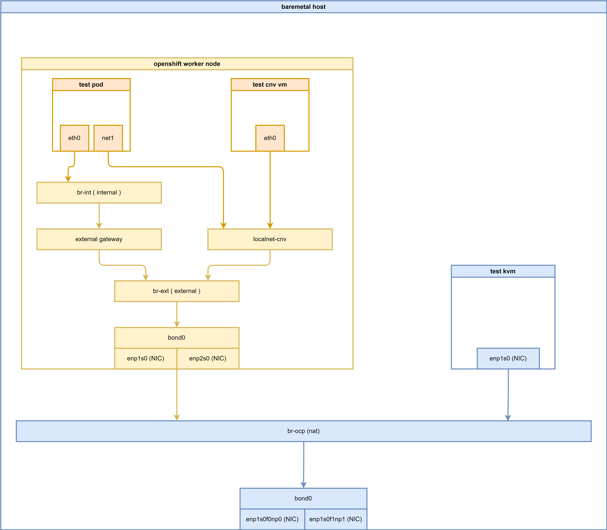
The solution describe here is supportd by BU, slack chat
Here is the reference document
ovn on 2nd network
Okay, let’s start installing OVN on the second network plane. There is comprehensive official documentation available that we can follow.
- https://docs.openshift.com/container-platform/4.16/networking/multiple_networks/configuring-additional-network.html#configuration-ovnk-additional-networks_configuring-additional-network
install NMState operator first
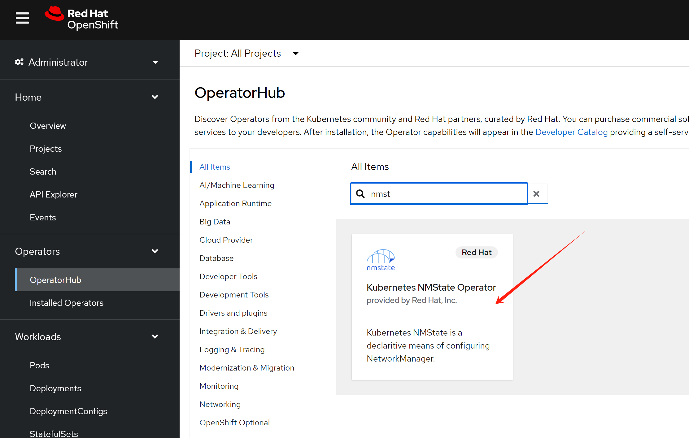
create a deployment with default setting.
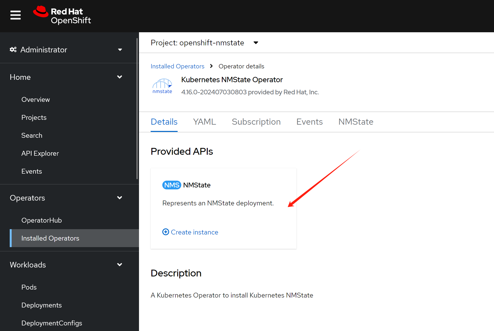
To create a second network plane, we first need to consider whether to use an overlay or underlay. In the past, OpenShift only supported underlay network planes, such as macvlan. However, OpenShift now offers ovn, an overlay technology, as an option. In this case, we will use ovn to create the second overlay network plane.
When creating the ovn second network plane, there are two choices:
- Connect this network plane to the default ovn network plane and attach it to br-ex.
- Create another ovs bridge and attach it to the physical network, effectively separating it from the default ovn network plane.
This second ovn network plane is a Layer 2 network. We can choose to configure IPAM, which allows k8s/ocp to assign IP addresses to pods. However, our ultimate goal is the cnv scenario, in which IP addresses are configured on the VM or obtained through DHCP. Therefore, we will not configure IPAM for this ovn second network plane.
# create the mapping
oc delete -f ${BASE_DIR}/data/install/ovn-mapping.conf
cat << EOF > ${BASE_DIR}/data/install/ovn-mapping.conf
---
apiVersion: nmstate.io/v1
kind: NodeNetworkConfigurationPolicy
metadata:
name: mapping
spec:
nodeSelector:
node-role.kubernetes.io/worker: ''
desiredState:
ovn:
bridge-mappings:
- localnet: localnet-cnv
bridge: br-ex
state: present
EOF
oc apply -f ${BASE_DIR}/data/install/ovn-mapping.conf
# oc delete -f ${BASE_DIR}/data/install/ovn-mapping.conf
# cat << EOF > ${BASE_DIR}/data/install/ovn-mapping.conf
# ---
# apiVersion: nmstate.io/v1
# kind: NodeNetworkConfigurationPolicy
# metadata:
# name: mapping
# spec:
# nodeSelector:
# node-role.kubernetes.io/worker: ''
# desiredState:
# interfaces:
# - name: ovs-br-cnv
# description: |-
# A dedicated OVS bridge with eth1 as a port
# allowing all VLANs and untagged traffic
# type: ovs-bridge
# state: up
# bridge:
# options:
# stp: true
# port:
# - name: enp9s0
# ovn:
# bridge-mappings:
# - localnet: localnet-cnv
# bridge: ovs-br-cnv
# state: present
# EOF
# oc apply -f ${BASE_DIR}/data/install/ovn-mapping.conf
# create the network attachment definition
oc delete -f ${BASE_DIR}/data/install/ovn-k8s-cni-overlay.conf
var_namespace='llm-demo'
cat << EOF > ${BASE_DIR}/data/install/ovn-k8s-cni-overlay.conf
apiVersion: k8s.cni.cncf.io/v1
kind: NetworkAttachmentDefinition
metadata:
name: $var_namespace-localnet-network
namespace: $var_namespace
spec:
config: |-
{
"cniVersion": "0.3.1",
"name": "localnet-cnv",
"type": "ovn-k8s-cni-overlay",
"topology":"localnet",
"_subnets": "192.168.99.0/24",
"_vlanID": 33,
"_mtu": 1500,
"netAttachDefName": "$var_namespace/$var_namespace-localnet-network",
"_excludeSubnets": "10.100.200.0/29"
}
EOF
oc apply -f ${BASE_DIR}/data/install/ovn-k8s-cni-overlay.conf
try with pod
With the second network plane in place, we’ll start by testing network connectivity using pods. We test pods first because the VMs inside cnv/kubevirt run within pods. Testing the pod scenario makes the subsequent VM scenario much easier.
We’ll create three pods, each attached to both the default OVN network plane and the second OVN network plane. We’ll also use pod annotations to specify a second IP address for each pod.
Finally, we’ll test connectivity from the pods to various target IP addresses.
# create demo pods
oc delete -f ${BASE_DIR}/data/install/pod.yaml
var_namespace='llm-demo'
cat << EOF > ${BASE_DIR}/data/install/pod.yaml
---
apiVersion: v1
kind: Pod
metadata:
annotations:
k8s.v1.cni.cncf.io/networks: '[
{
"name": "$var_namespace-localnet-network",
"_mac": "02:03:04:05:06:07",
"_interface": "myiface1",
"ips": [
"192.168.77.91/24"
]
}
]'
name: tinypod
namespace: $var_namespace
labels:
app: tinypod
spec:
containers:
- image: quay.io/wangzheng422/qimgs:rocky9-test-2024.06.17.v01
imagePullPolicy: IfNotPresent
name: agnhost-container
command: [ "/bin/bash", "-c", "--" ]
args: [ "tail -f /dev/null" ]
---
apiVersion: v1
kind: Pod
metadata:
annotations:
k8s.v1.cni.cncf.io/networks: '[
{
"name": "$var_namespace-localnet-network",
"_mac": "02:03:04:05:06:07",
"_interface": "myiface1",
"ips": [
"192.168.77.92/24"
]
}
]'
name: tinypod-01
namespace: $var_namespace
labels:
app: tinypod-01
spec:
containers:
- image: quay.io/wangzheng422/qimgs:rocky9-test-2024.06.17.v01
imagePullPolicy: IfNotPresent
name: agnhost-container
command: [ "/bin/bash", "-c", "--" ]
args: [ "tail -f /dev/null" ]
---
apiVersion: v1
kind: Pod
metadata:
annotations:
k8s.v1.cni.cncf.io/networks: '[
{
"name": "$var_namespace-localnet-network",
"_mac": "02:03:04:05:06:07",
"_interface": "myiface1",
"ips": [
"192.168.77.93/24"
]
}
]'
name: tinypod-02
namespace: $var_namespace
labels:
app: tinypod-02
spec:
containers:
- image: quay.io/wangzheng422/qimgs:rocky9-test-2024.06.17.v01
imagePullPolicy: IfNotPresent
name: agnhost-container
command: [ "/bin/bash", "-c", "--" ]
args: [ "tail -f /dev/null" ]
EOF
oc apply -f ${BASE_DIR}/data/install/pod.yaml
# testing with ping to another pod
oc exec -it tinypod -- ping 192.168.77.92
# PING 192.168.77.92 (192.168.77.92) 56(84) bytes of data.
# 64 bytes from 192.168.77.92: icmp_seq=1 ttl=64 time=0.411 ms
# 64 bytes from 192.168.77.92: icmp_seq=2 ttl=64 time=0.114 ms
# ....
# testing with ping to another vm
oc exec -it tinypod -- ping 192.168.77.10
# PING 192.168.77.10 (192.168.77.10) 56(84) bytes of data.
# 64 bytes from 192.168.77.10: icmp_seq=1 ttl=64 time=1.09 ms
# 64 bytes from 192.168.77.10: icmp_seq=2 ttl=64 time=0.310 ms
# ....
# ping to outside world through default network
oc exec -it tinypod -- ping 8.8.8.8
# PING 8.8.8.8 (8.8.8.8) 56(84) bytes of data.
# 64 bytes from 8.8.8.8: icmp_seq=1 ttl=114 time=1.26 ms
# 64 bytes from 8.8.8.8: icmp_seq=2 ttl=114 time=0.795 ms
# ......
# trace the path to 8.8.8.8, we can see it goes through default network
oc exec -it tinypod -- tracepath -4 -n 8.8.8.8
# 1?: [LOCALHOST] pmtu 1400
# 1: 8.8.8.8 0.772ms asymm 2
# 1: 8.8.8.8 0.328ms asymm 2
# 2: 100.64.0.2 0.518ms asymm 3
# 3: 192.168.99.1 0.758ms
# 4: 169.254.77.1 0.605ms
# 5: 10.253.38.104 0.561ms
# 6: 10.253.37.232 0.563ms
# 7: 10.253.37.194 0.732ms asymm 8
# 8: 147.28.130.14 0.983ms
# 9: 198.16.4.121 0.919ms asymm 13
# 10: no reply
# ....
oc exec -it tinypod -- ip a
# 1: lo: <LOOPBACK,UP,LOWER_UP> mtu 65536 qdisc noqueue state UNKNOWN group default qlen 1000
# link/loopback 00:00:00:00:00:00 brd 00:00:00:00:00:00
# inet 127.0.0.1/8 scope host lo
# valid_lft forever preferred_lft forever
# inet6 ::1/128 scope host
# valid_lft forever preferred_lft forever
# 2: eth0@if116: <BROADCAST,MULTICAST,UP,LOWER_UP> mtu 1400 qdisc noqueue state UP group default
# link/ether 0a:58:0a:84:00:65 brd ff:ff:ff:ff:ff:ff link-netnsid 0
# inet 10.132.0.101/23 brd 10.132.1.255 scope global eth0
# valid_lft forever preferred_lft forever
# inet6 fe80::858:aff:fe84:65/64 scope link
# valid_lft forever preferred_lft forever
# 3: net1@if118: <BROADCAST,MULTICAST,UP,LOWER_UP> mtu 1400 qdisc noqueue state UP group default
# link/ether 0a:58:c0:a8:4d:5b brd ff:ff:ff:ff:ff:ff link-netnsid 0
# inet 192.168.77.91/24 brd 192.168.77.255 scope global net1
# valid_lft forever preferred_lft forever
# inet6 fe80::858:c0ff:fea8:4d5b/64 scope link
# valid_lft forever preferred_lft forever
oc exec -it tinypod -- ip r
# default via 10.132.0.1 dev eth0
# 10.132.0.0/23 dev eth0 proto kernel scope link src 10.132.0.101
# 10.132.0.0/14 via 10.132.0.1 dev eth0
# 100.64.0.0/16 via 10.132.0.1 dev eth0
# 172.22.0.0/16 via 10.132.0.1 dev eth0
# 192.168.77.0/24 dev net1 proto kernel scope link src 192.168.77.91try with multi-network policy
In real-world customer scenarios, the goal is to control network traffic flowing in and out on the second network plane, ensuring security. Here, we can use multi-network policy to fulfill this requirement. Multi-network policy shares the same syntax as network policy, but the difference lies in specifying the effective network plane.
We first use a default rule to deny all incoming and outgoing traffic. Then, we add rules to allow specific traffic. As our configured network lacks IPAM settings, Kubernetes cannot determine the IP addresses of pods on the second network plane. Therefore, we can only restrict incoming and outgoing external targets using IP addresses, not labels.
The network rules defined in this document are illustrated in the following logical diagram:
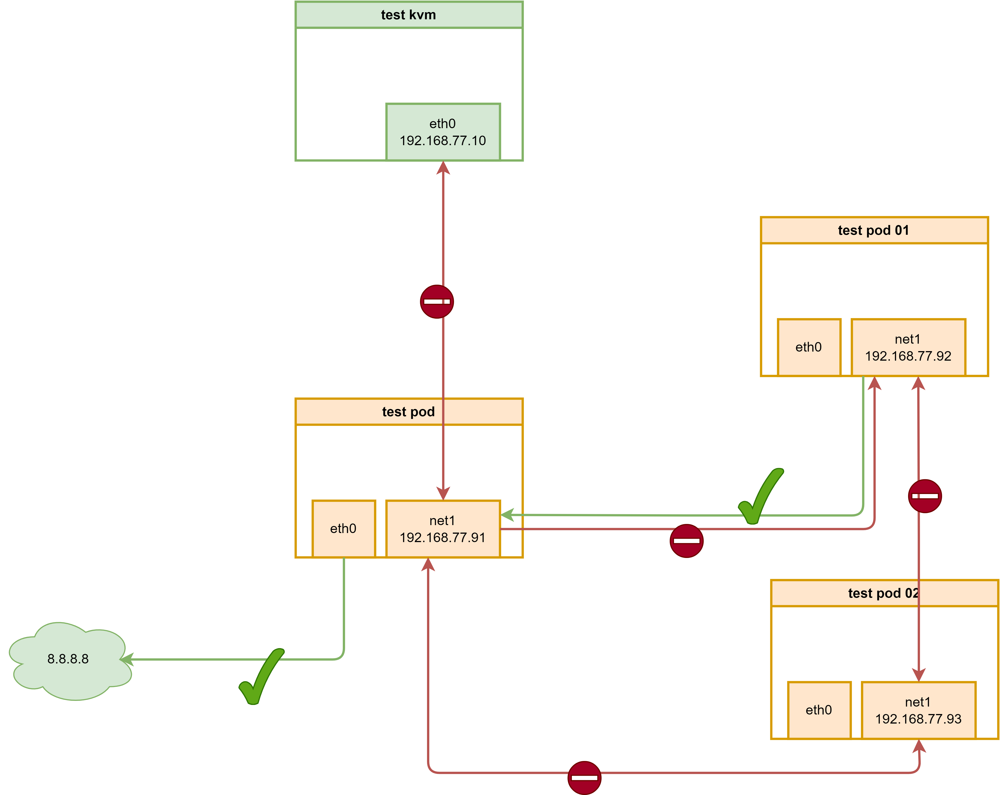
Currently, multi-network policy is not supported by AdminNetworkPolicy.
- https://redhat-internal.slack.com/archives/CDCP2LA9L/p1719501818805819
offical doc:
- https://docs.openshift.com/container-platform/4.15/networking/multiple_networks/configuring-multi-network-policy.html#nw-multi-network-policy-enable_configuring-multi-network-policy
# enable multi-network policy in cluster level
cat << EOF > ${BASE_DIR}/data/install/multi-network-policy.yaml
apiVersion: operator.openshift.io/v1
kind: Network
metadata:
name: cluster
spec:
useMultiNetworkPolicy: true
EOF
oc patch network.operator.openshift.io cluster --type=merge --patch-file=${BASE_DIR}/data/install/multi-network-policy.yaml
# if you want to revert back
cat << EOF > ${BASE_DIR}/data/install/multi-network-policy.yaml
apiVersion: operator.openshift.io/v1
kind: Network
metadata:
name: cluster
spec:
useMultiNetworkPolicy: false
EOF
oc patch network.operator.openshift.io cluster --type=merge --patch-file=${BASE_DIR}/data/install/multi-network-policy.yaml
# below is add by default
# cat << EOF > ${BASE_DIR}/data/install/multi-network-policy-rules.yaml
# kind: ConfigMap
# apiVersion: v1
# metadata:
# name: multi-networkpolicy-custom-rules
# namespace: openshift-multus
# data:
# custom-v6-rules.txt: |
# # accept NDP
# -p icmpv6 --icmpv6-type neighbor-solicitation -j ACCEPT
# -p icmpv6 --icmpv6-type neighbor-advertisement -j ACCEPT
# # accept RA/RS
# -p icmpv6 --icmpv6-type router-solicitation -j ACCEPT
# -p icmpv6 --icmpv6-type router-advertisement -j ACCEPT
# EOF
# oc delete -f ${BASE_DIR}/data/install/multi-network-policy-rules.yaml
# oc apply -f ${BASE_DIR}/data/install/multi-network-policy-rules.yaml
# deny all by default
oc delete -f ${BASE_DIR}/data/install/multi-network-policy-deny-all.yaml
var_namespace='llm-demo'
cat << EOF > ${BASE_DIR}/data/install/multi-network-policy-deny-all.yaml
---
apiVersion: k8s.cni.cncf.io/v1beta1
kind: MultiNetworkPolicy
metadata:
name: deny-by-default
namespace: $var_namespace
annotations:
k8s.v1.cni.cncf.io/policy-for: $var_namespace/$var_namespace-localnet-network
spec:
podSelector: {}
policyTypes:
- Ingress
- Egress
ingress: []
egress: []
# do not work, as no cidr defined
# ---
# apiVersion: k8s.cni.cncf.io/v1beta1
# kind: MultiNetworkPolicy
# metadata:
# name: deny-by-default
# namespace: default
# annotations:
# k8s.v1.cni.cncf.io/policy-for: $var_namespace/$var_namespace-localnet-network
# spec:
# podSelector: {}
# policyTypes:
# - Ingress
# - Egress
# ingress:
# - from:
# - ipBlock:
# except: '0.0.0.0/0
# egress:
# - to:
# - ipBlock:
# except: '0.0.0.0/0'
EOF
oc apply -f ${BASE_DIR}/data/install/multi-network-policy-deny-all.yaml
# get pod ip of tinypod-01
ANOTHER_TINYPOD_IP=$(oc get pod tinypod-01 -o=jsonpath='{.status.podIP}')
echo $ANOTHER_TINYPOD_IP
# 10.132.0.40
# testing with ping to another pod using default network eth0
oc exec -it tinypod -- ping $ANOTHER_TINYPOD_IP
# PING 10.132.0.40 (10.132.0.40) 56(84) bytes of data.
# 64 bytes from 10.132.0.40: icmp_seq=1 ttl=64 time=0.806 ms
# 64 bytes from 10.132.0.40: icmp_seq=2 ttl=64 time=0.250 ms
# ......
# testing with ping to another pod using 2nd network net1
oc exec -it tinypod -- ping 192.168.77.92
# PING 192.168.77.92 (192.168.77.92) 56(84) bytes of data.
# ^C
# --- 192.168.77.92 ping statistics ---
# 30 packets transmitted, 0 received, 100% packet loss, time 29721ms
# testing with ping to another vm
# notice, here we can not ping the vm
oc exec -it tinypod -- ping 192.168.77.10
# PING 192.168.77.10 (192.168.77.10) 56(84) bytes of data.
# ^C
# --- 192.168.77.10 ping statistics ---
# 4 packets transmitted, 0 received, 100% packet loss, time 3091ms
# it still can ping to outside world through default network
oc exec -it tinypod -- ping 8.8.8.8
# PING 8.8.8.8 (8.8.8.8) 56(84) bytes of data.
# 64 bytes from 8.8.8.8: icmp_seq=1 ttl=114 time=1.69 ms
# 64 bytes from 8.8.8.8: icmp_seq=2 ttl=114 time=1.27 ms
# .....
# get pod ip of tinypod
ANOTHER_TINYPOD_IP=$(oc get pod tinypod -o=jsonpath='{.status.podIP}')
echo $ANOTHER_TINYPOD_IP
# 10.132.0.39
# testing with ping to another pod using default network eth0
oc exec -it tinypod-01 -- ping $ANOTHER_TINYPOD_IP
# PING 10.132.0.39 (10.132.0.39) 56(84) bytes of data.
# 64 bytes from 10.132.0.39: icmp_seq=1 ttl=64 time=0.959 ms
# 64 bytes from 10.132.0.39: icmp_seq=2 ttl=64 time=0.594 ms
# ......
# testing with ping to another pod using 2nd network net1
oc exec -it tinypod-01 -- ping 192.168.77.91
# PING 192.168.77.91 (192.168.77.91) 56(84) bytes of data.
# ^C
# --- 192.168.77.91 ping statistics ---
# 30 packets transmitted, 0 received, 100% packet loss, time 29707ms
# allow traffic only between tinypod and tinypod-01
oc delete -f ${BASE_DIR}/data/install/multi-network-policy-allow-some.yaml
var_namespace='llm-demo'
cat << EOF > ${BASE_DIR}/data/install/multi-network-policy-allow-some.yaml
# ---
# apiVersion: k8s.cni.cncf.io/v1beta1
# kind: MultiNetworkPolicy
# metadata:
# name: allow-specific-pods
# namespace: $var_namespace
# annotations:
# k8s.v1.cni.cncf.io/policy-for: $var_namespace-localnet-network
# spec:
# podSelector:
# matchLabels:
# app: tinypod
# policyTypes:
# - Ingress
# ingress:
# - from:
# - podSelector:
# matchLabels:
# app: tinypod-01
---
apiVersion: k8s.cni.cncf.io/v1beta1
kind: MultiNetworkPolicy
metadata:
name: allow-ipblock
namespace: $var_namespace
annotations:
k8s.v1.cni.cncf.io/policy-for: $var_namespace-localnet-network
spec:
podSelector:
matchLabels:
app: tinypod
policyTypes:
- Ingress
# - Egress
ingress:
- from:
- ipBlock:
cidr: 192.168.77.92/32
# egress:
# - to:
# - ipBlock:
# cidr: 192.168.77.92/32
---
apiVersion: k8s.cni.cncf.io/v1beta1
kind: MultiNetworkPolicy
metadata:
name: allow-ipblock-01
namespace: $var_namespace
annotations:
k8s.v1.cni.cncf.io/policy-for: $var_namespace-localnet-network
spec:
podSelector:
matchLabels:
app: tinypod-01
policyTypes:
# - Ingress
- Egress
# ingress:
# - from:
# - ipBlock:
# cidr: 192.168.77.91/32
egress:
- to:
- ipBlock:
cidr: 192.168.77.91/32
EOF
oc apply -f ${BASE_DIR}/data/install/multi-network-policy-allow-some.yaml
# get pod ip of tinypod-01
ANOTHER_TINYPOD_IP=$(oc get pod tinypod-01 -o=jsonpath='{.status.podIP}')
echo $ANOTHER_TINYPOD_IP
# 10.132.0.40
# testing with ping to another pod using default network eth0
oc exec -it tinypod -- ping $ANOTHER_TINYPOD_IP
# PING 10.132.0.40 (10.132.0.40) 56(84) bytes of data.
# 64 bytes from 10.132.0.40: icmp_seq=1 ttl=64 time=0.806 ms
# 64 bytes from 10.132.0.40: icmp_seq=2 ttl=64 time=0.250 ms
# ......
# testing with ping to another pod using 2nd network net1
oc exec -it tinypod -- ping 192.168.77.92
# PING 192.168.77.92 (192.168.77.92) 56(84) bytes of data.
# ^C
# --- 192.168.77.92 ping statistics ---
# 30 packets transmitted, 0 received, 100% packet loss, time 29721ms
oc exec -it tinypod -- ping 192.168.77.93
# PING 192.168.77.93 (192.168.77.93) 56(84) bytes of data.
# ^C
# --- 192.168.77.93 ping statistics ---
# 4 packets transmitted, 0 received, 100% packet loss, time 3065ms
# testing with ping to another vm
# if we do not set egress rule for default-deny-all, and allow-some, here we can ping the vm
oc exec -it tinypod -- ping 192.168.77.10
# PING 192.168.77.10 (192.168.77.10) 56(84) bytes of data.
# 64 bytes from 192.168.77.10: icmp_seq=1 ttl=64 time=0.672 ms
# 64 bytes from 192.168.77.10: icmp_seq=2 ttl=64 time=0.674 ms
# ......
# but we set the egress rule, so we can not ping vm now
oc exec -it tinypod -- ping 192.168.77.10
# PING 192.168.77.10 (192.168.77.10) 56(84) bytes of data.
# ^C
# --- 192.168.77.10 ping statistics ---
# 3 packets transmitted, 0 received, 100% packet loss, time 2085ms
# it still can ping to outside world through default network
oc exec -it tinypod -- ping 8.8.8.8
# PING 8.8.8.8 (8.8.8.8) 56(84) bytes of data.
# 64 bytes from 8.8.8.8: icmp_seq=1 ttl=114 time=1.69 ms
# 64 bytes from 8.8.8.8: icmp_seq=2 ttl=114 time=1.27 ms
# .....
# get pod ip of tinypod
ANOTHER_TINYPOD_IP=$(oc get pod tinypod -o=jsonpath='{.status.podIP}')
echo $ANOTHER_TINYPOD_IP
# 10.132.0.39
# testing with ping to another pod using default network eth0
oc exec -it tinypod-01 -- ping $ANOTHER_TINYPOD_IP
# PING 10.132.0.39 (10.132.0.39) 56(84) bytes of data.
# 64 bytes from 10.132.0.39: icmp_seq=1 ttl=64 time=0.959 ms
# 64 bytes from 10.132.0.39: icmp_seq=2 ttl=64 time=0.594 ms
# ......
# testing with ping to another pod using 2nd network net1
# you can see, we can ping to tinypod, which is allowed by multi-network policy
oc exec -it tinypod-01 -- ping 192.168.77.91
# PING 192.168.77.91 (192.168.77.91) 56(84) bytes of data.
# 64 bytes from 192.168.77.91: icmp_seq=1 ttl=64 time=0.278 ms
# 64 bytes from 192.168.77.91: icmp_seq=2 ttl=64 time=0.032 ms
# ....
oc exec -it tinypod-01 -- ping 192.168.77.93
# PING 192.168.77.93 (192.168.77.93) 56(84) bytes of data.
# ^C
# --- 192.168.77.93 ping statistics ---
# 4 packets transmitted, 0 received, 100% packet loss, time 3085ms
# testing with ping to vm
oc exec -it tinypod-01 -- ping 192.168.77.10
# PING 192.168.77.10 (192.168.77.10) 56(84) bytes of data.
# ^C
# --- 192.168.77.10 ping statistics ---
# 3 packets transmitted, 0 received, 100% packet loss, time 2085ms
# it still can ping to outside world through default network
oc exec -it tinypod-01 -- ping 8.8.8.8
# PING 8.8.8.8 (8.8.8.8) 56(84) bytes of data.
# 64 bytes from 8.8.8.8: icmp_seq=1 ttl=114 time=1.15 ms
# 64 bytes from 8.8.8.8: icmp_seq=2 ttl=114 time=0.824 ms
# ......
oc exec -it tinypod-02 -- ping 192.168.77.91
# PING 192.168.77.91 (192.168.77.91) 56(84) bytes of data.
# ^C
# --- 192.168.77.91 ping statistics ---
# 4 packets transmitted, 0 received, 100% packet loss, time 3089ms
oc exec -it tinypod-02 -- ping 192.168.77.92
# PING 192.168.77.92 (192.168.77.92) 56(84) bytes of data.
# ^C
# --- 192.168.77.92 ping statistics ---
# 4 packets transmitted, 0 received, 100% packet loss, time 3069ms
oc exec -it tinypod-02 -- ping 192.168.77.10
# PING 192.168.77.10 (192.168.77.10) 56(84) bytes of data.
# ^C
# --- 192.168.77.10 ping statistics ---
# 3 packets transmitted, 0 received, 100% packet loss, time 2067ms
oc get multi-networkpolicies -A
# NAMESPACE NAME AGE
# llm-demo allow-ipblock 74m
# llm-demo allow-ipblock-01 74m
# llm-demo deny-by-default 82m
Our ovn on 2nd network do not have ipam, so ingress with pod
selector is not working, see log from
project: openshift-ovn-kubernetes -> pod: ovnkube-node -> container ovnkube-controller.
This is why we use ipblock to allow traffic between pods.
I0718 13:03:32.619246 7659 obj_retry.go:346] Retry delete failed for *v1beta1.MultiNetworkPolicy llm-demo/allow-specific-pods, will try again later: invalid ingress peer {&LabelSelector{MatchLabels:map[string]string{app: tinypod-01,},MatchExpressions:[]LabelSelectorRequirement{},} nil
} in multi-network policy allow-specific-pods; IPAM-less networks can only have ipBlockpeers
try with cnv
[!NOTE] CNV use case will not work if the underlying network is not allowed multi-mac on single port.
first, we need to install cnv operator
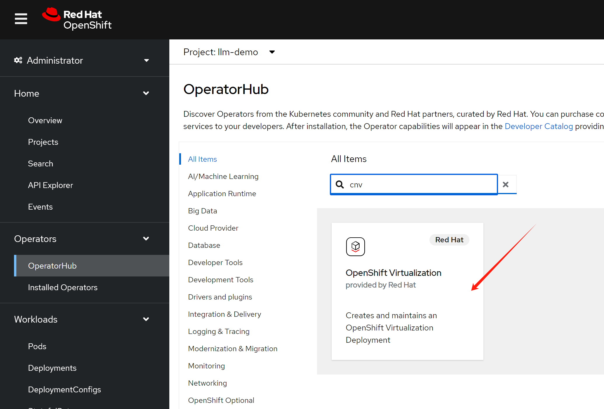
create default instance with default settings.
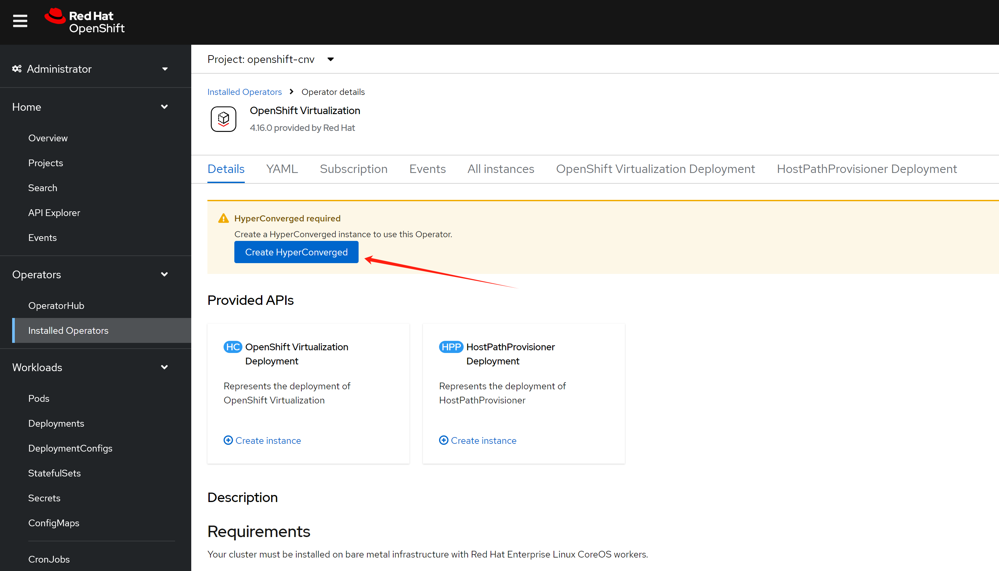
Wait some time, the cnv will download os base image. After that, we create vm
Create vm with centos stream9 from template catalog
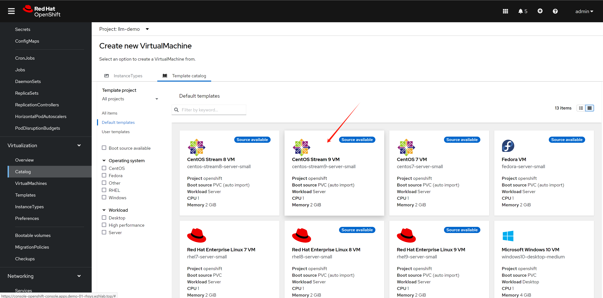
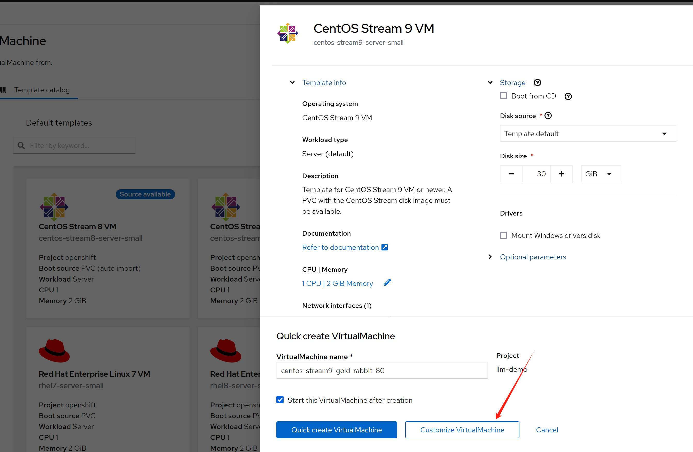
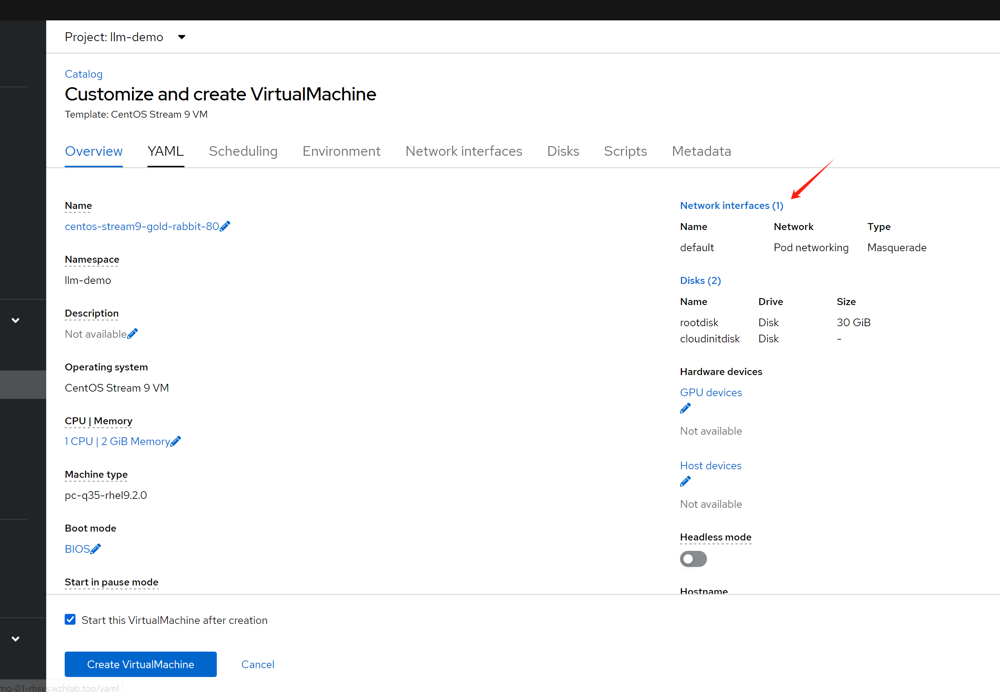
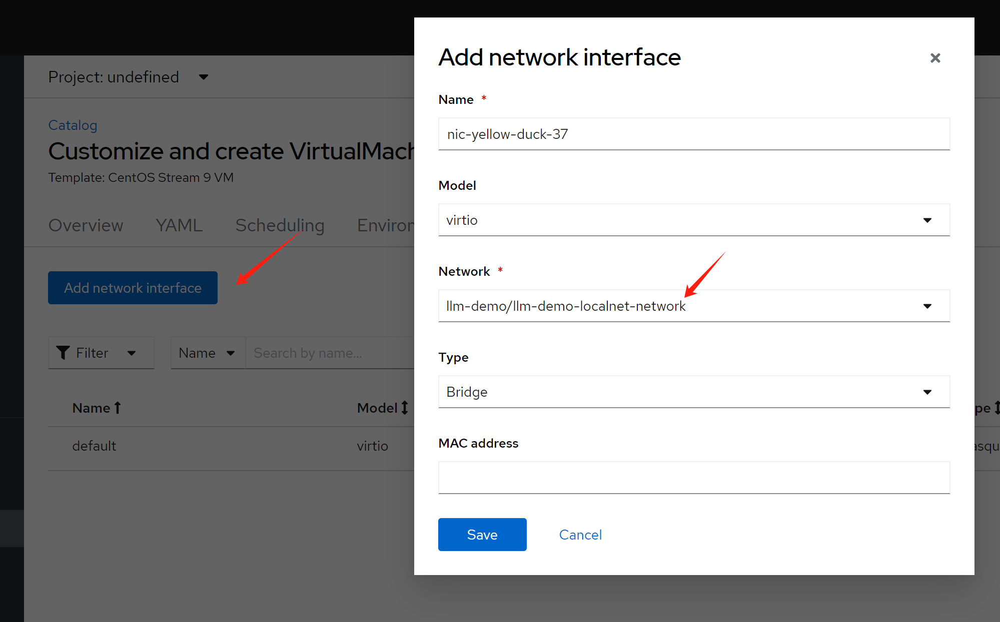
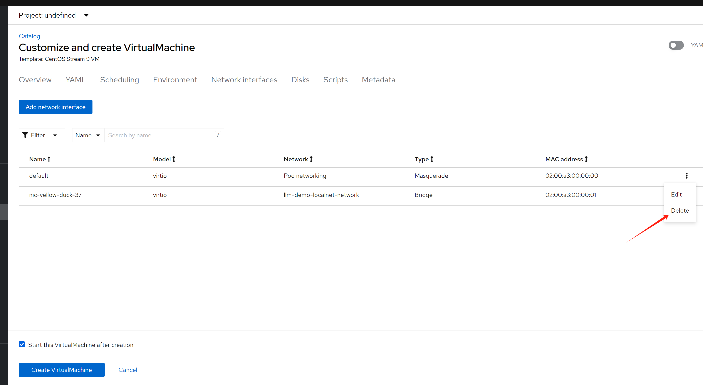
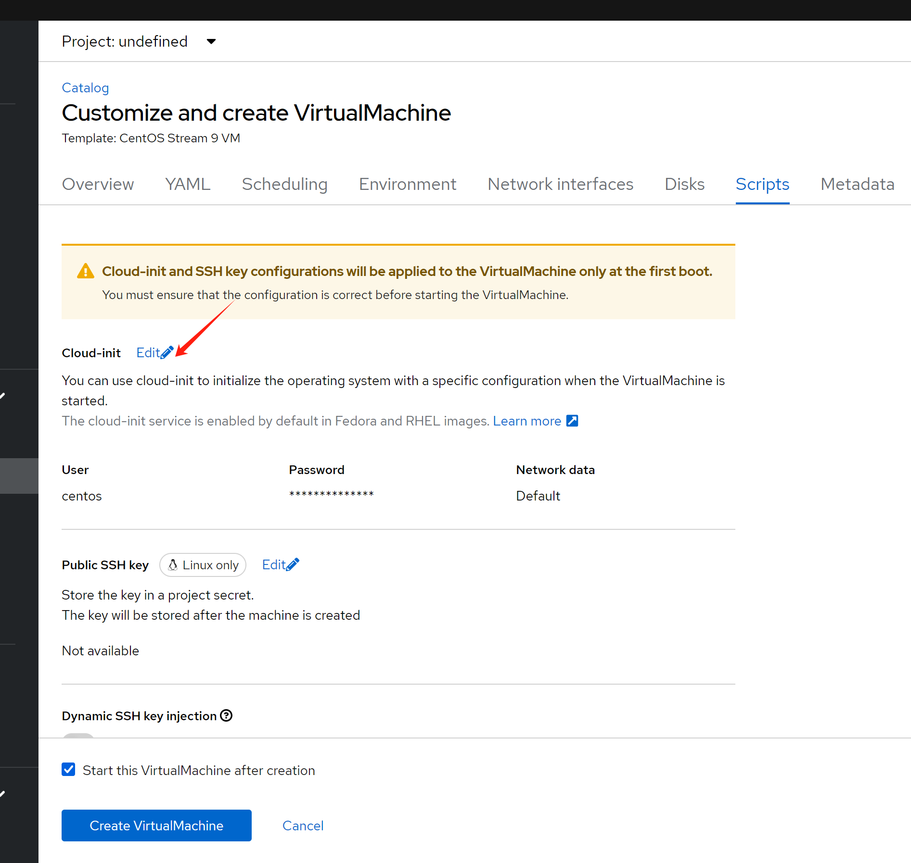
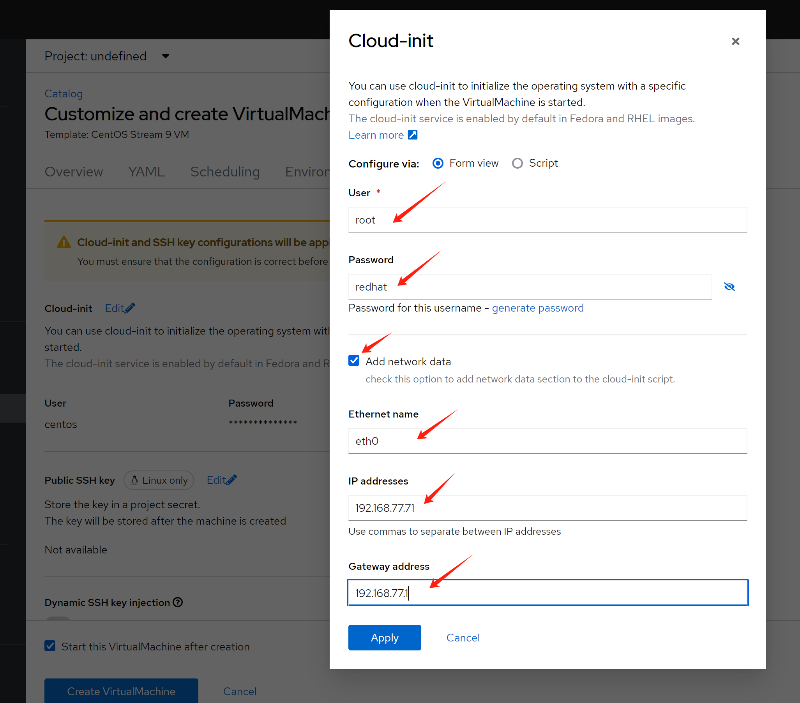
In the beginning, the vm can not ping to any ip, and can not be ping from any ip. After apply additional network policy, the vm can ping to gateway, and the test pod, and outside world.
The overall network policy is like below:
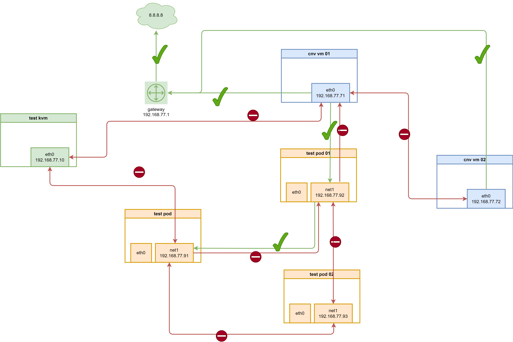
# get vm
oc get vm
# NAME AGE STATUS READY
# centos-stream9-gold-rabbit-80 2d17h Running True
# centos-stream9-green-ferret-41 54s Running True
# allow traffic only between tinypod and tinypod-01
oc delete -f ${BASE_DIR}/data/install/multi-network-policy-allow-some-cnv.yaml
var_namespace='llm-demo'
var_vm='centos-stream9-gold-rabbit-80'
var_vm_01='centos-stream9-green-ferret-41'
cat << EOF > ${BASE_DIR}/data/install/multi-network-policy-allow-some-cnv.yaml
---
apiVersion: k8s.cni.cncf.io/v1beta1
kind: MultiNetworkPolicy
metadata:
name: allow-ipblock-cnv-01
namespace: $var_namespace
annotations:
k8s.v1.cni.cncf.io/policy-for: $var_namespace-localnet-network
spec:
podSelector:
matchLabels:
vm.kubevirt.io/name: $var_vm
policyTypes:
- Ingress
- Egress
ingress:
- from:
# from gateway
- ipBlock:
cidr: 192.168.77.1/32
# from test pod
- ipBlock:
cidr: 192.168.77.92/32
egress:
- to:
# can go anywhere on the internet, except the ips in the same network
- ipBlock:
cidr: 0.0.0.0/0
except:
- 192.168.77.0/24
# to gateway
- ipBlock:
cidr: 192.168.77.1/32
# to test pod
- ipBlock:
cidr: 192.168.77.92/32
---
apiVersion: k8s.cni.cncf.io/v1beta1
kind: MultiNetworkPolicy
metadata:
name: allow-ipblock-cnv-02
namespace: $var_namespace
annotations:
k8s.v1.cni.cncf.io/policy-for: $var_namespace-localnet-network
spec:
podSelector:
matchLabels:
vm.kubevirt.io/name: $var_vm_01
policyTypes:
- Ingress
- Egress
ingress:
- from:
# from gateway
- ipBlock:
cidr: 192.168.77.1/32
egress:
- to:
# to gateway
- ipBlock:
cidr: 192.168.77.1/32
---
apiVersion: k8s.cni.cncf.io/v1beta1
kind: MultiNetworkPolicy
metadata:
name: allow-ipblock-cnv-03
namespace: $var_namespace
annotations:
k8s.v1.cni.cncf.io/policy-for: $var_namespace-localnet-network
spec:
podSelector:
matchLabels:
app: tinypod-01
policyTypes:
- Ingress
ingress:
- from:
# to test vm
- ipBlock:
cidr: 192.168.77.71/32
EOF
oc apply -f ${BASE_DIR}/data/install/multi-network-policy-allow-some-cnv.yamltest
We conducted some tests based on existing rules to see if they align with our prefetch logic.
# on the cnv vm(192.168.77.71), can not ping the outside test vm
ping 192.169.77.10
# PING 192.169.77.10 (192.169.77.10) 56(84) bytes of data.
# ^C
# --- 192.169.77.10 ping statistics ---
# 3 packets transmitted, 0 received, 100% packet loss, time 2053ms
# on the outside test vm(192.168.77.10), can not ping the cnv vm
ping 192.168.77.71
# PING 192.168.77.71 (192.168.77.71) 56(84) bytes of data.
# ^C
# --- 192.168.77.71 ping statistics ---
# 52 packets transmitted, 0 received, 100% packet loss, time 52260ms
# on the cnv vm(192.168.77.71), can ping the gateway, and the test pod, and outside
ping 192.168.77.1
# PING 192.168.77.1 (192.168.77.1) 56(84) bytes of data.
# 64 bytes from 192.168.77.1: icmp_seq=1 ttl=64 time=1.22 ms
# 64 bytes from 192.168.77.1: icmp_seq=2 ttl=64 time=0.812 ms
# ....
ping 192.168.77.92
# PING 192.168.77.92 (192.168.77.92) 56(84) bytes of data.
# 64 bytes from 192.168.77.92: icmp_seq=1 ttl=64 time=1.32 ms
# 64 bytes from 192.168.77.92: icmp_seq=2 ttl=64 time=0.821 ms
# ....
ping 8.8.8.8
# PING 8.8.8.8 (8.8.8.8) 56(84) bytes of data.
# 64 bytes from 8.8.8.8: icmp_seq=1 ttl=116 time=1.39 ms
# 64 bytes from 8.8.8.8: icmp_seq=2 ttl=116 time=1.11 ms
# ....
# on the cnv vm(192.168.77.71), can not ping the test vm(192.168.77.10), and another test pod
ping 192.168.77.10
# PING 192.168.77.10 (192.168.77.10) 56(84) bytes of data.
# ^C
# --- 192.168.77.10 ping statistics ---
# 3 packets transmitted, 0 received, 100% packet loss, time 2078ms
ping 192.168.77.93
# PING 192.168.77.93 (192.168.77.93) 56(84) bytes of data.
# ^C
# --- 192.168.77.93 ping statistics ---
# 4 packets transmitted, 0 received, 100% packet loss, time 3087ms
# on the test pod(192.168.77.92), can not ping the cnv vm(192.168.77.71)
oc exec -it tinypod-01 -- ping 192.168.77.71
# PING 192.168.77.71 (192.168.77.71) 56(84) bytes of data.
# ^C
# --- 192.168.77.71 ping statistics ---
# 2 packets transmitted, 0 received, 100% packet loss, time 1003ms
# on another cnv vm(192.168.77.72), can ping to gateway(192.168.77.1), but can not ping to cnv test vm(192.168.77.71)
ping 192.168.77.1
# PING 192.168.77.1 (192.168.77.1) 56(84) bytes of data.
# 64 bytes from 192.168.77.1: icmp_seq=1 ttl=64 time=0.756 ms
# 64 bytes from 192.168.77.1: icmp_seq=2 ttl=64 time=0.434 ms
ping 192.168.77.71
# PING 192.168.77.71 (192.168.77.71) 56(84) bytes of data.
# ^C
# --- 192.168.77.71 ping statistics ---
# 5 packets transmitted, 0 received, 100% packet loss, time 4109msnetwork observ
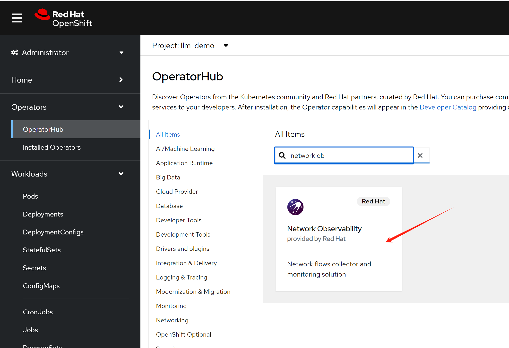
It was said, upon v1.6.1, network observ support 2nd ovn network.
tech in the background
Our tests show that ovn on the second network meets customer requirements. However, we are not satisfied with just the surface configuration. We want to understand the underlying principles, especially how the various components on the network level connect and communicate with each other.
for pod
Let’s first examine how various network components connect in a pod environment.
# let's see the interface, mac, and ip address in pod
oc exec -it tinypod -n llm-demo -- ip a
# 1: lo: <LOOPBACK,UP,LOWER_UP> mtu 65536 qdisc noqueue state UNKNOWN group default qlen 1000
# link/loopback 00:00:00:00:00:00 brd 00:00:00:00:00:00
# inet 127.0.0.1/8 scope host lo
# valid_lft forever preferred_lft forever
# inet6 ::1/128 scope host
# valid_lft forever preferred_lft forever
# 2: eth0@if52: <BROADCAST,MULTICAST,UP,LOWER_UP> mtu 1400 qdisc noqueue state UP group default
# link/ether 0a:58:0a:84:00:35 brd ff:ff:ff:ff:ff:ff link-netnsid 0
# inet 10.132.0.53/23 brd 10.132.1.255 scope global eth0
# valid_lft forever preferred_lft forever
# inet6 fe80::858:aff:fe84:35/64 scope link
# valid_lft forever preferred_lft forever
# 3: net1@if56: <BROADCAST,MULTICAST,UP,LOWER_UP> mtu 1400 qdisc noqueue state UP group default
# link/ether 0a:58:c0:a8:4d:5b brd ff:ff:ff:ff:ff:ff link-netnsid 0
# inet 192.168.77.91/24 brd 192.168.77.255 scope global net1
# valid_lft forever preferred_lft forever
# inet6 fe80::858:c0ff:fea8:4d5b/64 scope link
# valid_lft forever preferred_lft forever
# on master-01 node
# let's check the nic interface information
ip a sho dev if56
# 56: a51a8137f92b2_3@if3: <BROADCAST,MULTICAST,UP,LOWER_UP> mtu 1400 qdisc noqueue master ovs-system state UP group default
# link/ether 7e:03:ea:89:f1:48 brd ff:ff:ff:ff:ff:ff link-netns 23fb7f53-6063-4954-9aa7-07c271699e72
# inet6 fe80::7c03:eaff:fe89:f148/64 scope link
# valid_lft forever preferred_lft forever
ip a show dev ovs-system
# 4: ovs-system: <BROADCAST,MULTICAST> mtu 1500 qdisc noop state DOWN group default qlen 1000
# link/ether 16:a7:be:91:ae:72 brd ff:ff:ff:ff:ff:ff
# there is no firewall rules on ocp node
nft list ruleset | grep 192.168.77
# nothing
############################################
# show something in the ovn internally
# get the ovn pod, so we can exec into it
VAR_POD=`oc get pod -n openshift-ovn-kubernetes -o wide | grep master-01-demo | grep ovnkube-node | awk '{print $1}'`
# get ovn information about pod default network
# we can see it is a port on switch
oc exec -it ${VAR_POD} -c ovn-controller -n openshift-ovn-kubernetes -- ovn-nbctl show | grep -i 0a:58:0a:84:00:35 -A 10 -B 10
# switch e22c4467-5d22-4fa2-83d7-d00d19c9684d (master-01-demo)
# port openshift-nmstate_nmstate-webhook-58fc66d999-h7jrb
# addresses: ["0a:58:0a:84:00:45 10.132.0.69"]
# port openshift-cnv_virt-handler-dtv6k
# addresses: ["0a:58:0a:84:00:e2 10.132.0.226"]
# ......
# port llm-demo_tinypod
# addresses: ["0a:58:0a:84:00:35 10.132.0.53"]
# ......
# get ov information about pod 2nd ovn network
# we can ss it is a port on another swtich
oc exec -it ${VAR_POD} -c ovn-controller -n openshift-ovn-kubernetes -- ovn-nbctl show | grep -i 0a:58:c0:a8:4d:5b -A 10 -B 10
# ....
# switch 5ba54a76-89fb-4610-95c9-b3262a3bb55c (localnet.cnv_ovn_localnet_switch)
# port llm.demo.llm.demo.localnet.network_llm-demo_virt-launcher-centos-stream9-green-ferret-41-ksmzt
# addresses: ["02:00:a3:00:00:02"]
# port llm.demo.llm.demo.localnet.network_llm-demo_virt-launcher-centos-stream9-gold-rabbit-80-vjfdm
# addresses: ["02:00:a3:00:00:01"]
# port localnet.cnv_ovn_localnet_port
# type: localnet
# addresses: ["unknown"]
# port llm.demo.llm.demo.localnet.network_llm-demo_tinypod
# addresses: ["0a:58:c0:a8:4d:5b 192.168.77.91"]
# port llm.demo.llm.demo.localnet.network_llm-demo_tinypod-01
# addresses: ["0a:58:c0:a8:4d:5c 192.168.77.92"]
# port llm.demo.llm.demo.localnet.network_llm-demo_tinypod-02
# addresses: ["0a:58:c0:a8:4d:5d 192.168.77.93"]
# ....
# get the overall switch and router topologies
oc exec -it ${VAR_POD} -c ovn-controller -n openshift-ovn-kubernetes -- ovn-nbctl show
# switch 7f294c4e-fce4-4c16-b830-17d7ca545078 (ext_master-01-demo)
# port br-ex_master-01-demo
# type: localnet
# addresses: ["unknown"]
# port etor-GR_master-01-demo
# type: router
# addresses: ["00:50:56:8e:b8:11"]
# router-port: rtoe-GR_master-01-demo
# switch 9b84fe16-da8c-4abb-b071-6c46c5191a68 (join)
# port jtor-GR_master-01-demo
# type: router
# router-port: rtoj-GR_master-01-demo
# port jtor-ovn_cluster_router
# type: router
# router-port: rtoj-ovn_cluster_router
# switch 5ba54a76-89fb-4610-95c9-b3262a3bb55c (localnet.cnv_ovn_localnet_switch)
# port llm.demo.llm.demo.localnet.network_llm-demo_virt-launcher-centos-stream9-green-ferret-41-ksmzt addresses: ["02:00:a3:00:00:02"]
# port llm.demo.llm.demo.localnet.network_llm-demo_virt-launcher-centos-stream9-gold-rabbit-80-vjfdm
# addresses: ["02:00:a3:00:00:01"]
# port localnet.cnv_ovn_localnet_port
# type: localnet
# addresses: ["unknown"]
# port llm.demo.llm.demo.localnet.network_llm-demo_tinypod
# addresses: ["0a:58:c0:a8:4d:5b 192.168.77.91"]
# port llm.demo.llm.demo.localnet.network_llm-demo_tinypod-01
# addresses: ["0a:58:c0:a8:4d:5c 192.168.77.92"]
# port llm.demo.llm.demo.localnet.network_llm-demo_tinypod-02
# addresses: ["0a:58:c0:a8:4d:5d 192.168.77.93"]
# switch e22c4467-5d22-4fa2-83d7-d00d19c9684d (master-01-demo)
# port openshift-nmstate_nmstate-webhook-58fc66d999-h7jrb
# addresses: ["0a:58:0a:84:00:45 10.132.0.69"]
# port openshift-cnv_virt-handler-dtv6k
# addresses: ["0a:58:0a:84:00:e2 10.132.0.226"]
# ......
# get the ovs config, and we can see the localnet mappings in the external-ids
oc exec -it ${VAR_POD} -c ovn-controller -n openshift-ovn-kubernetes -- ovs-vsctl list Open_vSwitch
# _uuid : 7b956824-5c57-4065-8a84-8718dfaf04b5
# bridges : [9f680a4d-1085-4421-95fe-f5933c4b39d4, a6a8ff10-58dc-4202-afed-4ee527cbabfd]
# cur_cfg : 2775
# datapath_types : [netdev, system]
# datapaths : {system=f78f4023-298f-44c4-ac91-a5c5eb3d1b31}
# db_version : "8.3.1"
# dpdk_initialized : false
# dpdk_version : "DPDK 22.11.4"
# external_ids : {hostname=master-01-demo, ovn-bridge-mappings="localnet-cnv:br-ex,physnet:br-ex", ovn-enable-lflow-cache="true", ovn-encap-ip="192.168.99.23", ovn-encap-type=geneve, ovn-is-interconn="true", ovn-memlimit-lflow-cache-kb="1048576", ovn-monitor-all="true", ovn-ofctrl-wait-before-clear="0", ovn-openflow-probe-interval="180", ovn-remote="unix:/var/run/ovn/ovnsb_db.sock", ovn-remote-probe-interval="180000", rundir="/var/run/openvswitch", system-id="17b1f051-7ec5-468a-8e1a-ffb8fa9e85bc"}
# iface_types : [bareudp, erspan, geneve, gre, gtpu, internal, ip6erspan, ip6gre, lisp, patch, stt, system, tap, vxlan]
# manager_options : []
# next_cfg : 2775
# other_config : {bundle-idle-timeout="180", ovn-chassis-idx-17b1f051-7ec5-468a-8e1a-ffb8fa9e85bc="", vlan-limit="0"}
# ovs_version : "3.1.5"
# ssl : []
# statistics : {}
# system_type : rhcos
# system_version : "4.15"
# get the ovs config, and we can see the localnet mappings in the external-ids
oc exec -it ${VAR_POD} -c ovn-controller -n openshift-ovn-kubernetes -- ovs-vsctl get Open_vSwitch . external-ids:ovn-bridge-mappings
# "localnet-cnv:br-ex,physnet:br-ex"
# from the ovn topology, we can see the localnet port is a type of localnet
oc exec -it ${VAR_POD} -c ovn-controller -n openshift-ovn-kubernetes -- ovn-nbctl show | grep -i localnet -A 10 -B 10
# switch 7f294c4e-fce4-4c16-b830-17d7ca545078 (ext_master-01-demo)
# port br-ex_master-01-demo
# type: localnet
# addresses: ["unknown"]
# port etor-GR_master-01-demo
# type: router
# addresses: ["00:50:56:8e:b8:11"]
# router-port: rtoe-GR_master-01-demo
# ......
# switch 5ba54a76-89fb-4610-95c9-b3262a3bb55c (localnet.cnv_ovn_localnet_switch)
# port llm.demo.llm.demo.localnet.network_llm-demo_virt-launcher-centos-stream9-green-ferret-41-ksmzt
# addresses: ["02:00:a3:00:00:02"]
# port llm.demo.llm.demo.localnet.network_llm-demo_virt-launcher-centos-stream9-gold-rabbit-80-vjfdm
# addresses: ["02:00:a3:00:00:01"]
# port localnet.cnv_ovn_localnet_port
# type: localnet
# addresses: ["unknown"]
# port llm.demo.llm.demo.localnet.network_llm-demo_tinypod
# addresses: ["0a:58:c0:a8:4d:5b 192.168.77.91"]
# port llm.demo.llm.demo.localnet.network_llm-demo_tinypod-01
# addresses: ["0a:58:c0:a8:4d:5c 192.168.77.92"]
# port llm.demo.llm.demo.localnet.network_llm-demo_tinypod-02
# addresses: ["0a:58:c0:a8:4d:5d 192.168.77.93"]
# from the ovs config, we can see it the localnet is patch interface
oc exec -it ${VAR_POD} -c ovn-controller -n openshift-ovn-kubernetes -- ovs-vsctl show | grep localnet -A 10 -B 240
# 7b956824-5c57-4065-8a84-8718dfaf04b5
# Bridge br-ex
# Port bond0
# Interface bond0
# type: system
# Port patch-localnet.cnv_ovn_localnet_port-to-br-int
# Interface patch-localnet.cnv_ovn_localnet_port-to-br-int
# type: patch
# options: {peer=patch-br-int-to-localnet.cnv_ovn_localnet_port}
# Port br-ex
# Interface br-ex
# type: internal
# Port patch-br-ex_master-01-demo-to-br-int
# Interface patch-br-ex_master-01-demo-to-br-int
# type: patch
# options: {peer=patch-br-int-to-br-ex_master-01-demo}
# Bridge br-int
# fail_mode: secure
# datapath_type: system
# Port "9fd1fa97d3b5e7b"
# Interface "9fd1fa97d3b5e7b"
# Port patch-br-int-to-br-ex_master-01-demo
# Interface patch-br-int-to-br-ex_master-01-demo
# type: patch
# options: {peer=patch-br-ex_master-01-demo-to-br-int}
# Port "58e1d0efb6c8c2e"
# Interface "58e1d0efb6c8c2e"
# Port "30195ca79f01bc4"
# Interface "30195ca79f01bc4"
# Port "10f1f38d0564fae"
# Interface "10f1f38d0564fae"
# Port "431208f15c76c56"
# Interface "431208f15c76c56"
# Port "057e84e928fce70"
# Interface "057e84e928fce70"
# Port "4e283efaf2d5646"
# Interface "4e283efaf2d5646"
# Port "8bc46d89de8a039"
# Interface "8bc46d89de8a039"
# Port bf55fdba2667ba8
# Interface bf55fdba2667ba8
# Port b6a2521573d6606
# Interface b6a2521573d6606
# Port patch-br-int-to-localnet.cnv_ovn_localnet_port
# Interface patch-br-int-to-localnet.cnv_ovn_localnet_port
# type: patch
# options: {peer=patch-localnet.cnv_ovn_localnet_port-to-br-int}
# Port "78534ac2a0363ac"
# Interface "78534ac2a0363ac"
# Port "6e9dd5224a95d0a"
# Interface "6e9dd5224a95d0a"
# Port ae6b4ac8a49d0e1
# Interface ae6b4ac8a49d0e1
# Port "57a625a7a04ae3c"
# Interface "57a625a7a04ae3c"
# Port "6862423e9a5a754"
# Interface "6862423e9a5a754"
# get the route list of the ovn
oc exec -it ${VAR_POD} -c ovn-controller -n openshift-ovn-kubernetes -- ovn-nbctl lr-list
# 3b0a3722-8d0a-4b47-a4fb-55123baa58f2 (GR_master-01-demo)
# 2b3e1161-6929-4ff3-a9d8-f96c8544dd8c (ovn_cluster_router)
# and check the route list of the router
oc exec -it ${VAR_POD} -c ovn-controller -n openshift-ovn-kubernetes -- ovn-nbctl lr-route-list GR_master-01-demo
# IPv4 Routes
# Route Table <main>:
# 169.254.169.0/29 169.254.169.4 dst-ip rtoe-GR_master-01-demo
# 10.132.0.0/14 100.64.0.1 dst-ip
# 0.0.0.0/0 192.168.99.1 dst-ip rtoe-GR_master-01-demo
oc exec -it ${VAR_POD} -c ovn-controller -n openshift-ovn-kubernetes -- ovn-nbctl lr-route-list ovn_cluster_router
# IPv4 Routes
# Route Table <main>:
# 100.64.0.2 100.64.0.2 dst-ip
# 10.132.0.0/14 100.64.0.2 src-ip
# check the routing policy
oc exec -it ${VAR_POD} -c ovn-controller -n openshift-ovn-kubernetes -- ovn-nbctl lr-policy-list GR_master-01-demo
# nothing
oc exec -it ${VAR_POD} -c ovn-controller -n openshift-ovn-kubernetes -- ovn-nbctl lr-policy-list ovn_cluster_router
# Routing Policies
# 1004 inport == "rtos-master-01-demo" && ip4.dst == 192.168.99.23 /* master-01-demo */ reroute 10.132.0.2
# 102 (ip4.src == $a4548040316634674295 || ip4.src == $a13607449821398607916) && ip4.dst == $a14918748166599097711 allow pkt_mark=1008
# 102 ip4.src == 10.132.0.0/14 && ip4.dst == 10.132.0.0/14 allow
# 102 ip4.src == 10.132.0.0/14 && ip4.dst == 100.64.0.0/16 allow
# get the various address set
oc exec -it ${VAR_POD} -c ovn-controller -n openshift-ovn-kubernetes -- ovn-nbctl list Address_Set
# .....
# _uuid : a50f42ff-6f11-423d-ae1a-e1c6dfd5784b
# addresses : []
# external_ids : {ip-family=v4, "k8s.ovn.org/id"="default-network-controller:Namespace:openshift-nutanix-infra:v4", "k8s.ovn.org/name"=openshift-nutanix-infra, "k8s.ovn.org/owner-controller"=default-network-controller, "k8s.ovn.org/owner-type"=Namespace}
# name : a10781256116209244644
# _uuid : d18dd13f-5220-4aa9-8b45-a4ace95a0d8a
# addresses : ["10.132.0.3", "10.132.0.37"]
# external_ids : {ip-family=v4, "k8s.ovn.org/id"="default-network-controller:Namespace:openshift-network-diagnostics:v4", "k8s.ovn.org/name"=openshift-network-diagnostics, "k8s.ovn.org/owner-controller"=default-network-controller, "k8s.ovn.org/owner-type"=Namespace}
# name : a1966919964212966539
# search the address set
oc exec -it ${VAR_POD} -c ovn-controller -n openshift-ovn-kubernetes -- ovn-nbctl find Address_Set name=a4548040316634674295
# _uuid : 98aec42a-8191-411a-8401-fd659d7d8f67
# addresses : []
# external_ids : {ip-family=v4, "k8s.ovn.org/id"="default-network-controller:EgressIP:egressip-served-pods:v4", "k8s.ovn.org/name"=egressip-served-pods, "k8s.ovn.org/owner-controller"=default-network-controller, "k8s.ovn.org/owner-type"=EgressIP}
# name : a4548040316634674295
oc exec -it ${VAR_POD} -c ovn-controller -n openshift-ovn-kubernetes -- ovn-nbctl find Address_Set name=a13607449821398607916
# _uuid : 710f6749-66c7-41d1-a9d3-bb00989e16a2
# addresses : []
# external_ids : {ip-family=v4, "k8s.ovn.org/id"="default-network-controller:EgressService:egresssvc-served-pods:v4", "k8s.ovn.org/name"=egresssvc-served-pods, "k8s.ovn.org/owner-controller"=default-network-controller, "k8s.ovn.org/owner-type"=EgressService}
# name : a13607449821398607916
oc exec -it ${VAR_POD} -c ovn-controller -n openshift-ovn-kubernetes -- ovn-nbctl find Address_Set name=a14918748166599097711
# _uuid : f2efc9fd-1b15-4ca3-ae72-1a2ff1c831e6
# addresses : ["192.168.99.23"]
# external_ids : {ip-family=v4, "k8s.ovn.org/id"="default-network-controller:EgressIP:node-ips:v4", "k8s.ovn.org/name"=node-ips, "k8s.ovn.org/owner-controller"=default-network-controller, "k8s.ovn.org/owner-type"=EgressIP}
# name : a14918748166599097711
# from ovn, get switch list
oc exec -it ${VAR_POD} -c ovn-controller -n openshift-ovn-kubernetes -- ovn-nbctl ls-list
# 7f294c4e-fce4-4c16-b830-17d7ca545078 (ext_master-01-demo)
# 9b84fe16-da8c-4abb-b071-6c46c5191a68 (join)
# 5ba54a76-89fb-4610-95c9-b3262a3bb55c (localnet.cnv_ovn_localnet_switch)
# e22c4467-5d22-4fa2-83d7-d00d19c9684d (master-01-demo)
# 317dad87-bf59-42ba-b3a3-e3c8b51b19a9 (transit_switch)
# try to get ACL from switch
oc exec -it ${VAR_POD} -c ovn-controller -n openshift-ovn-kubernetes -- ovn-nbctl acl-list ext_master-01-demo
# nothing
oc exec -it ${VAR_POD} -c ovn-controller -n openshift-ovn-kubernetes -- ovn-nbctl acl-list join
# nothing
oc exec -it ${VAR_POD} -c ovn-controller -n openshift-ovn-kubernetes -- ovn-nbctl acl-list localnet.cnv_ovn_localnet_switch
# nothing
oc exec -it ${VAR_POD} -c ovn-controller -n openshift-ovn-kubernetes -- ovn-nbctl acl-list master-01-demo
# to-lport 1001 (ip4.src==10.132.0.2) allow-related
oc exec -it ${VAR_POD} -c ovn-controller -n openshift-ovn-kubernetes -- ovn-nbctl acl-list transit_switch
# nothing
# finally, we find the acl from ACL table
oc exec -it ${VAR_POD} -c ovn-controller -n openshift-ovn-kubernetes -- ovn-nbctl list ACL | grep 192.168.77 -A 7 -B 7
# _uuid : e3fbdd41-3e7f-4a96-9491-b70b6f94d7de
# action : allow-related
# direction : to-lport
# external_ids : {direction=Ingress, gress-index="0", ip-block-index="0", "k8s.ovn.org/id"="localnet-cnv-network-controller:NetworkPolicy:llm-demo:allow-ipblock-cnv-02:Ingress:0:None:0", "k8s.ovn.org/name"="llm-demo:allow-ipblock-cnv-02", "k8s.ovn.org/owner-controller"=localnet-cnv-network-controller, "k8s.ovn.org/owner-type"=NetworkPolicy, port-policy-protocol=None}
# label : 0
# log : false
# match : "ip4.src == 192.168.77.1/32 && outport == @a2829002948383245342"
# meter : acl-logging
# name : "NP:llm-demo:allow-ipblock-cnv-02:Ingress:0"
# options : {}
# priority : 1001
# severity : []
# tier : 2
# _uuid : f1cc9a01-adc6-4664-b446-ba689f7128bc
# action : allow-related
# direction : from-lport
# external_ids : {direction=Egress, gress-index="0", ip-block-index="0", "k8s.ovn.org/id"="localnet-cnv-network-controller:NetworkPolicy:llm-demo:allow-ipblock-cnv-02:Egress:0:None:0", "k8s.ovn.org/name"="llm-demo:allow-ipblock-cnv-02", "k8s.ovn.org/owner-controller"=localnet-cnv-network-controller, "k8s.ovn.org/owner-type"=NetworkPolicy, port-policy-protocol=None}
# label : 0
# log : false
# match : "ip4.dst == 192.168.77.1/32 && inport == @a2829002948383245342"
# meter : acl-logging
# name : "NP:llm-demo:allow-ipblock-cnv-02:Egress:0"
# options : {apply-after-lb="true"}
# priority : 1001
# severity : []
# tier : 2
# _uuid : 65d51942-e031-4035-ab0a-183a00f1ca0d
# action : allow-related
# direction : to-lport
# external_ids : {direction=Ingress, gress-index="0", ip-block-index="1", "k8s.ovn.org/id"="localnet-cnv-network-controller:NetworkPolicy:llm-demo:allow-ipblock-cnv-01:Ingress:0:None:1", "k8s.ovn.org/name"="llm-demo:allow-ipblock-cnv-01", "k8s.ovn.org/owner-controller"=localnet-cnv-network-controller, "k8s.ovn.org/owner-type"=NetworkPolicy, port-policy-protocol=None}
# label : 0
# log : false
# match : "ip4.src == 192.168.77.92/32 && outport == @a2829001848871617131"
# meter : acl-logging
# name : "NP:llm-demo:allow-ipblock-cnv-01:Ingress:0"
# options : {}
# priority : 1001
# severity : []
# tier : 2
# --
# _uuid : 3ce03954-7d3c-4efd-a365-53afc84cb857
# action : allow-related
# direction : from-lport
# external_ids : {direction=Egress, gress-index="0", ip-block-index="0", "k8s.ovn.org/id"="localnet-cnv-network-controller:NetworkPolicy:llm-demo:allow-ipblock-01:Egress:0:None:0", "k8s.ovn.org/name"="llm-demo:allow-ipblock-01", "k8s.ovn.org/owner-controller"=localnet-cnv-network-controller, "k8s.ovn.org/owner-type"=NetworkPolicy, port-policy-protocol=None}
# label : 0
# log : false
# match : "ip4.dst == 192.168.77.91/32 && inport == @a679546803547591159"
# meter : acl-logging
# name : "NP:llm-demo:allow-ipblock-01:Egress:0"
# options : {apply-after-lb="true"}
# priority : 1001
# severity : []
# tier : 2
# _uuid : 65498494-b740-4ff4-a354-02507b7bbdb3
# action : allow-related
# direction : to-lport
# external_ids : {direction=Ingress, gress-index="0", ip-block-index="0", "k8s.ovn.org/id"="localnet-cnv-network-controller:NetworkPolicy:llm-demo:allow-ipblock-cnv-01:Ingress:0:None:0", "k8s.ovn.org/name"="llm-demo:allow-ipblock-cnv-01", "k8s.ovn.org/owner-controller"=localnet-cnv-network-controller, "k8s.ovn.org/owner-type"=NetworkPolicy, port-policy-protocol=None}
# label : 0
# log : false
# match : "ip4.src == 192.168.77.1/32 && outport == @a2829001848871617131"
# meter : acl-logging
# name : "NP:llm-demo:allow-ipblock-cnv-01:Ingress:0"
# options : {}
# priority : 1001
# severity : []
# tier : 2
# --
# _uuid : cd5e1be5-f02e-4fa4-ab1d-a08f3ce243ea
# action : allow-related
# direction : from-lport
# external_ids : {direction=Egress, gress-index="0", ip-block-index="1", "k8s.ovn.org/id"="localnet-cnv-network-controller:NetworkPolicy:llm-demo:allow-ipblock-cnv-01:Egress:0:None:1", "k8s.ovn.org/name"="llm-demo:allow-ipblock-cnv-01", "k8s.ovn.org/owner-controller"=localnet-cnv-network-controller, "k8s.ovn.org/owner-type"=NetworkPolicy, port-policy-protocol=None}
# label : 0
# log : false
# match : "ip4.dst == 192.168.77.1/32 && inport == @a2829001848871617131"
# meter : acl-logging
# name : "NP:llm-demo:allow-ipblock-cnv-01:Egress:0"
# options : {apply-after-lb="true"}
# priority : 1001
# severity : []
# tier : 2
# --
# _uuid : 454571c7-94e3-44e7-8b22-bbeee9458388
# action : allow-related
# direction : to-lport
# external_ids : {direction=Ingress, gress-index="0", ip-block-index="0", "k8s.ovn.org/id"="localnet-cnv-network-controller:NetworkPolicy:llm-demo:allow-ipblock:Ingress:0:None:0", "k8s.ovn.org/name"="llm-demo:allow-ipblock", "k8s.ovn.org/owner-controller"=localnet-cnv-network-controller, "k8s.ovn.org/owner-type"=NetworkPolicy, port-policy-protocol=None}
# label : 0
# log : false
# match : "ip4.src == 192.168.77.92/32 && outport == @a1333591772177041409"
# meter : acl-logging
# name : "NP:llm-demo:allow-ipblock:Ingress:0"
# options : {}
# priority : 1001
# severity : []
# tier : 2
# _uuid : eadaecf9-221a-4709-a6c9-b9d3fe018f37
# action : allow-related
# direction : to-lport
# external_ids : {direction=Ingress, gress-index="0", ip-block-index="0", "k8s.ovn.org/id"="localnet-cnv-network-controller:NetworkPolicy:llm-demo:allow-ipblock-cnv-03:Ingress:0:None:0", "k8s.ovn.org/name"="llm-demo:allow-ipblock-cnv-03", "k8s.ovn.org/owner-controller"=localnet-cnv-network-controller, "k8s.ovn.org/owner-type"=NetworkPolicy, port-policy-protocol=None}
# label : 0
# log : false
# match : "ip4.src == 192.168.77.71/32 && outport == @a2829004047894873553"
# meter : acl-logging
# name : "NP:llm-demo:allow-ipblock-cnv-03:Ingress:0"
# options : {}
# priority : 1001
# severity : []
# tier : 2
# --
# _uuid : a351006c-9368-4613-aadb-1be678467ea2
# action : allow-related
# direction : from-lport
# external_ids : {direction=Egress, gress-index="0", ip-block-index="2", "k8s.ovn.org/id"="localnet-cnv-network-controller:NetworkPolicy:llm-demo:allow-ipblock-cnv-01:Egress:0:None:2", "k8s.ovn.org/name"="llm-demo:allow-ipblock-cnv-01", "k8s.ovn.org/owner-controller"=localnet-cnv-network-controller, "k8s.ovn.org/owner-type"=NetworkPolicy, port-policy-protocol=None}
# label : 0
# log : false
# match : "ip4.dst == 192.168.77.92/32 && inport == @a2829001848871617131"
# meter : acl-logging
# name : "NP:llm-demo:allow-ipblock-cnv-01:Egress:0"
# options : {apply-after-lb="true"}
# priority : 1001
# severity : []
# tier : 2
# --
# _uuid : 35d5775e-29d5-4a05-9b4b-5d75a5619954
# action : allow-related
# direction : from-lport
# external_ids : {direction=Egress, gress-index="0", ip-block-index="0", "k8s.ovn.org/id"="localnet-cnv-network-controller:NetworkPolicy:llm-demo:allow-ipblock-cnv-01:Egress:0:None:0", "k8s.ovn.org/name"="llm-demo:allow-ipblock-cnv-01", "k8s.ovn.org/owner-controller"=localnet-cnv-network-controller, "k8s.ovn.org/owner-type"=NetworkPolicy, port-policy-protocol=None}
# label : 0
# log : false
# match : "ip4.dst == 0.0.0.0/0 && ip4.dst != {192.168.77.0/24} && inport == @a2829001848871617131"
# meter : acl-logging
# name : "NP:llm-demo:allow-ipblock-cnv-01:Egress:0"
# options : {apply-after-lb="true"}
# priority : 1001
# severity : []
# tier : 2
# and we can get ACL from port group
oc exec -it ${VAR_POD} -c ovn-controller -n openshift-ovn-kubernetes -- ovn-nbctl find Port_Group name=a2829001848871617131
# _uuid : 49892b19-bb75-4119-be55-c675a6539e30
# acls : [35d5775e-29d5-4a05-9b4b-5d75a5619954, 65498494-b740-4ff4-a354-02507b7bbdb3, 65d51942-e031-4035-ab0a-183a00f1ca0d, a351006c-9368-4613-aadb-1be678467ea2, cd5e1be5-f02e-4fa4-ab1d-a08f3ce243ea]
# external_ids : {"k8s.ovn.org/network"=localnet-cnv, name=llm-demo_allow-ipblock-cnv-01}
# name : a2829001848871617131
# ports : [1596d9ca-b8dd-4a07-a96a-7c2334bc8a7d]
# Get the names of all port groups
# To extract the inport values from the matches and remove the @ symbol, you can use the following command:
PORT_GROUPS=$(oc exec ${VAR_POD} -c ovn-controller -n openshift-ovn-kubernetes -- ovn-nbctl list ACL | grep '192.168.77' | sed -E 's/.*(inport|outport) == @([^"]*).*/\2/' | grep -v match | sort | uniq)
# List ACLs for each port group
for PG in $PORT_GROUPS
do
echo "==============================================="
echo "Info for port group $PG:"
oc exec -it ${VAR_POD} -c ovn-controller -n openshift-ovn-kubernetes -- ovn-nbctl find Port_Group name=$PG
echo
echo "Port info for port group $PG:"
oc exec -it ${VAR_POD} -c ovn-controller -n openshift-ovn-kubernetes -- ovn-nbctl --type=port-group list Ports | grep $PG
echo "ACLs for port group $PG:"
oc exec -it ${VAR_POD} -c ovn-controller -n openshift-ovn-kubernetes -- ovn-nbctl --type=port-group acl-list $PG
echo
done
# oc exec -it ${VAR_POD} -c ovn-controller -n openshift-ovn-kubernetes -- ovn-nbctl find Logical_Switch_Port | grep caa9cd48-3689-4917-98fc-ccd1af0a2171 -A 10
# ===============================================
# Info for port group a1333591772177041409:
# _uuid : f7496e97-b49d-49d3-882c-96a1733aa6f2
# acls : [454571c7-94e3-44e7-8b22-bbeee9458388]
# external_ids : {"k8s.ovn.org/network"=localnet-cnv, name=llm-demo_allow-ipblock}
# name : a1333591772177041409
# ports : [caa9cd48-3689-4917-98fc-ccd1af0a2171]
# ACLs for port group a1333591772177041409:
# to-lport 1001 (ip4.src == 192.168.77.92/32 && outport == @a1333591772177041409) allow-related
# ===============================================
# Info for port group a2829001848871617131:
# _uuid : 49892b19-bb75-4119-be55-c675a6539e30
# acls : [35d5775e-29d5-4a05-9b4b-5d75a5619954, 65498494-b740-4ff4-a354-02507b7bbdb3, 65d51942-e031-4035-ab0a-183a00f1ca0d, a351006c-9368-4613-aadb-1be678467ea2, cd5e1be5-f02e-4fa4-ab1d-a08f3ce243ea]
# external_ids : {"k8s.ovn.org/network"=localnet-cnv, name=llm-demo_allow-ipblock-cnv-01}
# name : a2829001848871617131
# ports : [1596d9ca-b8dd-4a07-a96a-7c2334bc8a7d]
# ACLs for port group a2829001848871617131:
# from-lport 1001 (ip4.dst == 0.0.0.0/0 && ip4.dst != {192.168.77.0/24} && inport == @a2829001848871617131) allow-related [after-lb]
# from-lport 1001 (ip4.dst == 192.168.77.1/32 && inport == @a2829001848871617131) allow-related [after-lb]
# from-lport 1001 (ip4.dst == 192.168.77.92/32 && inport == @a2829001848871617131) allow-related [after-lb]
# to-lport 1001 (ip4.src == 192.168.77.1/32 && outport == @a2829001848871617131) allow-related
# to-lport 1001 (ip4.src == 192.168.77.92/32 && outport == @a2829001848871617131) allow-related
# ===============================================
# Info for port group a2829002948383245342:
# _uuid : 253e7411-5aea-4b87-9a7f-f49e4883182e
# acls : [e3fbdd41-3e7f-4a96-9491-b70b6f94d7de, f1cc9a01-adc6-4664-b446-ba689f7128bc]
# external_ids : {"k8s.ovn.org/network"=localnet-cnv, name=llm-demo_allow-ipblock-cnv-02}
# name : a2829002948383245342
# ports : [01dc6763-c512-4b5d-8b26-844c72817aee]
# ACLs for port group a2829002948383245342:
# from-lport 1001 (ip4.dst == 192.168.77.1/32 && inport == @a2829002948383245342) allow-related [after-lb]
# to-lport 1001 (ip4.src == 192.168.77.1/32 && outport == @a2829002948383245342) allow-related
# ===============================================
# Info for port group a2829004047894873553:
# _uuid : 801cb68b-ce04-4982-9e13-c534dfb35289
# acls : [eadaecf9-221a-4709-a6c9-b9d3fe018f37]
# external_ids : {"k8s.ovn.org/network"=localnet-cnv, name=llm-demo_allow-ipblock-cnv-03}
# name : a2829004047894873553
# ports : [f73a1106-48fe-4e94-9c04-61132268ca49]
# ACLs for port group a2829004047894873553:
# to-lport 1001 (ip4.src == 192.168.77.71/32 && outport == @a2829004047894873553) allow-related
# ===============================================
# Info for port group a679546803547591159:
# _uuid : d2a1ce0d-1440-452f-9e86-6c9731b1299e
# acls : [3ce03954-7d3c-4efd-a365-53afc84cb857]
# external_ids : {"k8s.ovn.org/network"=localnet-cnv, name=llm-demo_allow-ipblock-01}
# name : a679546803547591159
# ports : [f73a1106-48fe-4e94-9c04-61132268ca49]
# ACLs for port group a679546803547591159:
# from-lport 1001 (ip4.dst == 192.168.77.91/32 && inport == @a679546803547591159) allow-related [after-lb]
for cnv
Let’s take a look at how networks communicate in a CNV scenario.
oc get vmi
# NAME AGE PHASE IP NODENAME READY
# centos-stream9-gold-rabbit-80 50m Running 192.168.77.71 master-01-demo True
# centos-stream9-green-ferret-41 50m Running 192.168.77.72 master-01-demo True
oc get pod -n llm-demo
# NAME READY STATUS RESTARTS AGE
# tinypod 1/1 Running 3 3d21h
# tinypod-01 1/1 Running 3 3d21h
# tinypod-02 1/1 Running 3 3d21h
# virt-launcher-centos-stream9-gold-rabbit-80-vjfdm 1/1 Running 0 9h
# virt-launcher-centos-stream9-green-ferret-41-ksmzt 1/1 Running 0 9h
pod_name=`oc get pods -n llm-demo | grep 'centos-stream9-gold-rabbit-80' | awk '{print $1}' `
echo $pod_name
# virt-launcher-centos-stream9-gold-rabbit-80-mkm5c
oc exec -it $pod_name -n llm-demo -- ip a
# 1: lo: <LOOPBACK,UP,LOWER_UP> mtu 65536 qdisc noqueue state UNKNOWN group default qlen 1000
# link/loopback 00:00:00:00:00:00 brd 00:00:00:00:00:00
# inet 127.0.0.1/8 scope host lo
# valid_lft forever preferred_lft forever
# inet6 ::1/128 scope host
# valid_lft forever preferred_lft forever
# 2: eth0@if147: <BROADCAST,MULTICAST,UP,LOWER_UP> mtu 1400 qdisc noqueue state UP group default
# link/ether 0a:58:0a:84:00:3c brd ff:ff:ff:ff:ff:ff link-netnsid 0
# inet 10.132.0.60/23 brd 10.132.1.255 scope global eth0
# valid_lft forever preferred_lft forever
# inet6 fe80::858:aff:fe84:3c/64 scope link
# valid_lft forever preferred_lft forever
# 3: ffec3d98bf3-nic@if148: <BROADCAST,MULTICAST,UP,LOWER_UP> mtu 1400 qdisc noqueue master k6t-ffec3d98bf3 state UP group default
# link/ether aa:fc:47:b3:ba:cc brd ff:ff:ff:ff:ff:ff link-netnsid 0
# inet6 fe80::a8fc:47ff:feb3:bacc/64 scope link
# valid_lft forever preferred_lft forever
# 4: k6t-ffec3d98bf3: <BROADCAST,MULTICAST,UP,LOWER_UP> mtu 1400 qdisc noqueue state UP group default qlen 1000
# link/ether 82:39:f2:cf:92:fe brd ff:ff:ff:ff:ff:ff
# inet6 fe80::a8fc:47ff:feb3:bacc/64 scope link
# valid_lft forever preferred_lft forever
# 5: tapffec3d98bf3: <BROADCAST,MULTICAST,UP,LOWER_UP> mtu 1400 qdisc fq_codel master k6t-ffec3d98bf3 state UP group default qlen 1000
# link/ether 82:39:f2:cf:92:fe brd ff:ff:ff:ff:ff:ff
# inet6 fe80::8039:f2ff:fecf:92fe/64 scope link
# valid_lft forever preferred_lft forever
# 6: podffec3d98bf3: <BROADCAST,NOARP> mtu 1400 qdisc noop state DOWN group default qlen 1000
# link/ether 02:00:a3:00:00:01 brd ff:ff:ff:ff:ff:ff
# inet6 fe80::a3ff:fe00:1/64 scope link
# valid_lft forever preferred_lft forever
oc exec -it $pod_name -n llm-demo -- ip r
# default via 10.132.0.1 dev eth0
# 10.132.0.0/23 dev eth0 proto kernel scope link src 10.132.0.60
# 10.132.0.0/14 via 10.132.0.1 dev eth0
# 100.64.0.0/16 via 10.132.0.1 dev eth0
# 172.22.0.0/16 via 10.132.0.1 dev eth0
oc exec -it $pod_name -n llm-demo -- ip tap
# tapffec3d98bf3: tap vnet_hdr persist user 107 group 107
oc exec -it $pod_name -n llm-demo -- ip a show type bridge
# 4: k6t-ffec3d98bf3: <BROADCAST,MULTICAST,UP,LOWER_UP> mtu 1400 qdisc noqueue state UP group default qlen 1000
# link/ether 82:39:f2:cf:92:fe brd ff:ff:ff:ff:ff:ff
# inet6 fe80::a8fc:47ff:feb3:bacc/64 scope link
# valid_lft forever preferred_lft forever
oc exec -it $pod_name -n llm-demo -- ip a show type dummy
# 6: podffec3d98bf3: <BROADCAST,NOARP> mtu 1400 qdisc noop state DOWN group default qlen 1000
# link/ether 02:00:a3:00:00:01 brd ff:ff:ff:ff:ff:ff
# inet6 fe80::a3ff:fe00:1/64 scope link
# valid_lft forever preferred_lft forever
oc exec -it $pod_name -n llm-demo -- ip link show type bridge_slave
# 3: ffec3d98bf3-nic@if148: <BROADCAST,MULTICAST,UP,LOWER_UP> mtu 1400 qdisc noqueue master k6t-ffec3d98bf3 state UP mode DEFAULT group default
# link/ether aa:fc:47:b3:ba:cc brd ff:ff:ff:ff:ff:ff link-netnsid 0
# 5: tapffec3d98bf3: <BROADCAST,MULTICAST,UP,LOWER_UP> mtu 1400 qdisc fq_codel master k6t-ffec3d98bf3 state UP mode DEFAULT group default qlen 1000
# link/ether 82:39:f2:cf:92:fe brd ff:ff:ff:ff:ff:ff
oc exec -it $pod_name -n llm-demo -- ip link show type veth
# 2: eth0@if147: <BROADCAST,MULTICAST,UP,LOWER_UP> mtu 1400 qdisc noqueue state UP mode DEFAULT group default
# link/ether 0a:58:0a:84:00:3c brd ff:ff:ff:ff:ff:ff link-netnsid 0
# 3: ffec3d98bf3-nic@if148: <BROADCAST,MULTICAST,UP,LOWER_UP> mtu 1400 qdisc noqueue master k6t-ffec3d98bf3 state UP mode DEFAULT group default
# link/ether aa:fc:47:b3:ba:cc brd ff:ff:ff:ff:ff:ff link-netnsid 0
oc exec -it $pod_name -n llm-demo -- tc qdisc show dev tapffec3d98bf3
# qdisc fq_codel 0: root refcnt 2 limit 10240p flows 1024 quantum 1414 target 5ms interval 100ms memory_limit 32Mb ecn drop_batch 64
oc exec -it $pod_name -n llm-demo -- tc qdisc show
# qdisc noqueue 0: dev lo root refcnt 2
# qdisc noqueue 0: dev eth0 root refcnt 2
# qdisc noqueue 0: dev ffec3d98bf3-nic root refcnt 2
# qdisc noqueue 0: dev k6t-ffec3d98bf3 root refcnt 2
# qdisc fq_codel 0: dev tapffec3d98bf3 root refcnt 2 limit 10240p flows 1024 quantum 1414 target 5ms interval 100ms memory_limit 32Mb ecn drop_batch 64
oc exec -it $pod_name -n llm-demo -- tc -s -p qdisc show dev tapffec3d98bf3 ingress
# nothing
# on master-01
ip a show dev if147
# 147: 13a96759b25594a@if2: <BROADCAST,MULTICAST,UP,LOWER_UP> mtu 1400 qdisc noqueue master ovs-system state UP group default
# link/ether 56:0e:48:92:0c:0c brd ff:ff:ff:ff:ff:ff link-netns c9cfaa12-f497-4e17-81b2-d32310b46849
# inet6 fe80::540e:48ff:fe92:c0c/64 scope link
# valid_lft forever preferred_lft forever
ip a show dev if148
# 148: 13a96759b2559_3@if3: <BROADCAST,MULTICAST,UP,LOWER_UP> mtu 1400 qdisc noqueue master ovs-system state UP group default
# link/ether 42:98:1b:dc:4b:83 brd ff:ff:ff:ff:ff:ff link-netns c9cfaa12-f497-4e17-81b2-d32310b46849
# inet6 fe80::4098:1bff:fedc:4b83/64 scope link
# valid_lft forever preferred_lft forever
# get the ovn pod, so we can exec into it
VAR_POD=`oc get pod -n openshift-ovn-kubernetes -o wide | grep master-01-demo | grep ovnkube-node | awk '{print $1}'`
# get ovn information about pod default network
# we can see it is a port on switch
oc exec -it ${VAR_POD} -c ovn-controller -n openshift-ovn-kubernetes -- ovn-nbctl show | grep -i 02:00:a3:00:00:01 -A 10 -B 10
# ......
# switch 5ba54a76-89fb-4610-95c9-b3262a3bb55c (localnet.cnv_ovn_localnet_switch)
# port localnet.cnv_ovn_localnet_port
# type: localnet
# addresses: ["unknown"]
# port llm.demo.llm.demo.localnet.network_llm-demo_virt-launcher-centos-stream9-green-ferret-41-bwdqg
# addresses: ["02:00:a3:00:00:02"]
# port llm.demo.llm.demo.localnet.network_llm-demo_tinypod-01
# addresses: ["0a:58:c0:a8:4d:5c 192.168.77.92"]
# port llm.demo.llm.demo.localnet.network_llm-demo_virt-launcher-centos-stream9-gold-rabbit-80-mkm5c
# addresses: ["02:00:a3:00:00:01"]
# port llm.demo.llm.demo.localnet.network_llm-demo_tinypod-02
# addresses: ["0a:58:c0:a8:4d:5d 192.168.77.93"]
# port llm.demo.llm.demo.localnet.network_llm-demo_tinypod
# addresses: ["0a:58:c0:a8:4d:5b 192.168.77.91"]
# ......
oc exec -it ${VAR_POD} -c ovn-controller -n openshift-ovn-kubernetes -- ovn-nbctl list Logical_Switch_Port | grep -i 02:00:a3:00:00:01 -A 10 -B 10
# ......
# _uuid : 64247ac4-52b7-440a-aec8-320cc1d742dd
# addresses : ["02:00:a3:00:00:01"]
# dhcpv4_options : []
# dhcpv6_options : []
# dynamic_addresses : []
# enabled : []
# external_ids : {"k8s.ovn.org/nad"="llm-demo/llm-demo-localnet-network", "k8s.ovn.org/network"=localnet-cnv, "k8s.ovn.org/topology"=localnet, namespace=llm-demo, pod="true"}
# ha_chassis_group : []
# mirror_rules : []
# name : llm.demo.llm.demo.localnet.network_llm-demo_virt-launcher-centos-stream9-gold-rabbit-80-mkm5c
# options : {iface-id-ver="b263f64c-a1c9-4ac8-a403-bd9fe8a4fdda", requested-chassis=master-01-demo}
# parent_name : []
# port_security : ["02:00:a3:00:00:01"]
# tag : []
# tag_request : []
# type : ""
# up : true
# ......
oc exec -it $pod_name -n llm-demo -- tc -s -p qdisc
# qdisc noqueue 0: dev lo root refcnt 2
# Sent 0 bytes 0 pkt (dropped 0, overlimits 0 requeues 0)
# backlog 0b 0p requeues 0
# qdisc noqueue 0: dev eth0 root refcnt 2
# Sent 0 bytes 0 pkt (dropped 0, overlimits 0 requeues 0)
# backlog 0b 0p requeues 0
# qdisc noqueue 0: dev ffec3d98bf3-nic root refcnt 2
# Sent 0 bytes 0 pkt (dropped 0, overlimits 0 requeues 0)
# backlog 0b 0p requeues 0
# qdisc noqueue 0: dev k6t-ffec3d98bf3 root refcnt 2
# Sent 0 bytes 0 pkt (dropped 0, overlimits 0 requeues 0)
# backlog 0b 0p requeues 0
# qdisc fq_codel 0: dev tapffec3d98bf3 root refcnt 2 limit 10240p flows 1024 quantum 1414 target 5ms interval 100ms memory_limit 32Mb ecn drop_batch 64
# Sent 100720 bytes 667 pkt (dropped 0, overlimits 0 requeues 0)
# backlog 0b 0p requeues 0
# maxpacket 70 drop_overlimit 0 new_flow_count 1 ecn_mark 0
# new_flows_len 0 old_flows_len 0
oc exec -it $pod_name -n llm-demo -- ps aufx ww
# USER PID %CPU %MEM VSZ RSS TTY STAT START TIME COMMAND
# qemu 199 0.0 0.0 7148 3236 pts/0 Rs+ 06:57 0:00 ps aufx ww
# qemu 1 0.0 0.0 1323636 18612 ? Ssl 04:28 0:00 /usr/bin/virt-launcher-monitor --qemu-timeout 287s --name centos-stream9-gold-rabbit-80 --uid 38ea74b9-2537-461d-8fea-6332b2c5e527 --namespace llm-demo --kubevirt-share-dir /var/run/kubevirt --ephemeral-disk-dir /var/run/kubevirt-ephemeral-disks --container-disk-dir /var/run/kubevirt/container-disks --grace-period-seconds 195 --hook-sidecars 0 --ovmf-path /usr/share/OVMF --run-as-nonroot
# qemu 12 0.0 0.1 2556556 64284 ? Sl 04:28 0:03 /usr/bin/virt-launcher --qemu-timeout 287s --name centos-stream9-gold-rabbit-80 --uid 38ea74b9-2537-461d-8fea-6332b2c5e527 --namespace llm-demo --kubevirt-share-dir /var/run/kubevirt --ephemeral-disk-dir /var/run/kubevirt-ephemeral-disks --container-disk-dir /var/run/kubevirt/container-disks --grace-period-seconds 195 --hook-sidecars 0 --ovmf-path /usr/share/OVMF --run-as-nonroot
# qemu 26 0.0 0.0 1360584 28512 ? Sl 04:28 0:03 \_ /usr/sbin/virtqemud -f /var/run/libvirt/virtqemud.conf
# qemu 27 0.0 0.0 104612 14964 ? Sl 04:28 0:00 \_ /usr/sbin/virtlogd -f /etc/libvirt/virtlogd.conf
# qemu 77 0.8 1.4 3016972 812124 ? Sl 04:28 1:12 /usr/libexec/qemu-kvm -name guest=llm-demo_centos-stream9-gold-rabbit-80,debug-threads=on -S -object {"qom-type":"secret","id":"masterKey0","format":"raw","file":"/var/run/kubevirt-private/libvirt/qemu/lib/domain-1-llm-demo_centos-stre/master-key.aes"} -machine pc-q35-rhel9.2.0,usb=off,dump-guest-core=off,memory-backend=pc.ram -accel kvm -cpu Snowridge,ss=on,vmx=on,fma=on,pcid=on,avx=on,f16c=on,hypervisor=on,tsc-adjust=on,bmi1=on,avx2=on,bmi2=on,invpcid=on,avx512f=on,avx512dq=on,adx=on,avx512ifma=on,avx512cd=on,avx512bw=on,avx512vl=on,avx512vbmi=on,pku=on,avx512vbmi2=on,vaes=on,vpclmulqdq=on,avx512vnni=on,avx512bitalg=on,avx512-vpopcntdq=on,rdpid=on,fsrm=on,md-clear=on,stibp=on,xsaves=on,abm=on,ibpb=on,ibrs=on,amd-stibp=on,amd-ssbd=on,rdctl-no=on,ibrs-all=on,skip-l1dfl-vmentry=on,mds-no=on,pschange-mc-no=on,mpx=off,clwb=off,cldemote=off,movdiri=off,movdir64b=off,core-capability=off,split-lock-detect=off -m 2048 -object {"qom-type":"memory-backend-ram","id":"pc.ram","size":2147483648} -overcommit mem-lock=off -smp 1,sockets=1,dies=1,cores=1,threads=1 -object {"qom-type":"iothread","id":"iothread1"} -uuid 9d13aeff-0832-5cdb-bf31-19c338276374 -smbios type=1,manufacturer=Red Hat,product=OpenShift Virtualization,version=4.15.3,uuid=9d13aeff-0832-5cdb-bf31-19c338276374,family=Red Hat -no-user-config -nodefaults -chardev socket,id=charmonitor,fd=18,server=on,wait=off -mon chardev=charmonitor,id=monitor,mode=control -rtc base=utc -no-shutdown -boot strict=on -device {"driver":"pcie-root-port","port":16,"chassis":1,"id":"pci.1","bus":"pcie.0","multifunction":true,"addr":"0x2"} -device {"driver":"pcie-root-port","port":17,"chassis":2,"id":"pci.2","bus":"pcie.0","addr":"0x2.0x1"} -device {"driver":"pcie-root-port","port":18,"chassis":3,"id":"pci.3","bus":"pcie.0","addr":"0x2.0x2"} -device {"driver":"pcie-root-port","port":19,"chassis":4,"id":"pci.4","bus":"pcie.0","addr":"0x2.0x3"} -device {"driver":"pcie-root-port","port":20,"chassis":5,"id":"pci.5","bus":"pcie.0","addr":"0x2.0x4"} -device {"driver":"pcie-root-port","port":21,"chassis":6,"id":"pci.6","bus":"pcie.0","addr":"0x2.0x5"} -device {"driver":"pcie-root-port","port":22,"chassis":7,"id":"pci.7","bus":"pcie.0","addr":"0x2.0x6"} -device {"driver":"pcie-root-port","port":23,"chassis":8,"id":"pci.8","bus":"pcie.0","addr":"0x2.0x7"} -device {"driver":"pcie-root-port","port":24,"chassis":9,"id":"pci.9","bus":"pcie.0","multifunction":true,"addr":"0x3"} -device {"driver":"pcie-root-port","port":25,"chassis":10,"id":"pci.10","bus":"pcie.0","addr":"0x3.0x1"} -device {"driver":"pcie-root-port","port":26,"chassis":11,"id":"pci.11","bus":"pcie.0","addr":"0x3.0x2"} -device {"driver":"virtio-scsi-pci-non-transitional","id":"scsi0","bus":"pci.5","addr":"0x0"} -device {"driver":"virtio-serial-pci-non-transitional","id":"virtio-serial0","bus":"pci.6","addr":"0x0"} -blockdev {"driver":"host_device","filename":"/dev/rootdisk","aio":"native","node-name":"libvirt-2-storage","cache":{"direct":true,"no-flush":false},"auto-read-only":true,"discard":"unmap"} -blockdev {"node-name":"libvirt-2-format","read-only":false,"discard":"unmap","cache":{"direct":true,"no-flush":false},"driver":"raw","file":"libvirt-2-storage"} -device {"driver":"virtio-blk-pci-non-transitional","bus":"pci.7","addr":"0x0","drive":"libvirt-2-format","id":"ua-rootdisk","bootindex":1,"write-cache":"on","werror":"stop","rerror":"stop"} -blockdev {"driver":"file","filename":"/var/run/kubevirt-ephemeral-disks/cloud-init-data/llm-demo/centos-stream9-gold-rabbit-80/noCloud.iso","node-name":"libvirt-1-storage","cache":{"direct":true,"no-flush":false},"auto-read-only":true,"discard":"unmap"} -blockdev {"node-name":"libvirt-1-format","read-only":false,"discard":"unmap","cache":{"direct":true,"no-flush":false},"driver":"raw","file":"libvirt-1-storage"} -device {"driver":"virtio-blk-pci-non-transitional","bus":"pci.8","addr":"0x0","drive":"libvirt-1-format","id":"ua-cloudinitdisk","write-cache":"on","werror":"stop","rerror":"stop"} -netdev {"type":"tap","fd":"19","vhost":true,"vhostfd":"21","id":"hostua-nic-yellow-duck-37"} -device {"driver":"virtio-net-pci-non-transitional","host_mtu":1400,"netdev":"hostua-nic-yellow-duck-37","id":"ua-nic-yellow-duck-37","mac":"02:00:a3:00:00:01","bus":"pci.1","addr":"0x0","romfile":""} -chardev socket,id=charserial0,fd=16,server=on,wait=off -device {"driver":"isa-serial","chardev":"charserial0","id":"serial0","index":0} -chardev socket,id=charchannel0,fd=17,server=on,wait=off -device {"driver":"virtserialport","bus":"virtio-serial0.0","nr":1,"chardev":"charchannel0","id":"channel0","name":"org.qemu.guest_agent.0"} -audiodev {"id":"audio1","driver":"none"} -vnc vnc=unix:/var/run/kubevirt-private/38ea74b9-2537-461d-8fea-6332b2c5e527/virt-vnc,audiodev=audio1 -device {"driver":"VGA","id":"video0","vgamem_mb":16,"bus":"pcie.0","addr":"0x1"} -device {"driver":"virtio-balloon-pci-non-transitional","id":"balloon0","free-page-reporting":true,"bus":"pci.9","addr":"0x0"} -object {"qom-type":"rng-random","id":"objrng0","filename":"/dev/urandom"} -device {"driver":"virtio-rng-pci-non-transitional","rng":"objrng0","id":"rng0","bus":"pci.10","addr":"0x0"} -sandbox on,obsolete=deny,elevateprivileges=deny,spawn=deny,resourcecontrol=deny -msg timestamp=on
# https://www.redhat.com/en/blog/hands-vhost-net-do-or-do-not-there-no-try
oc exec -it $pod_name -n llm-demo -- virsh list --all
# Authorization not available. Check if polkit service is running or see debug message for more information.
# Id Name State
# --------------------------------------------------------
# 1 llm-demo_centos-stream9-gold-rabbit-80 running
oc exec -it $pod_name -n llm-demo -- virsh dumpxml llm-demo_centos-stream9-gold-rabbit-80
# Authorization not available. Check if polkit service is running or see debug message for more information.
# <domain type='kvm' id='1'>
# <name>llm-demo_centos-stream9-gold-rabbit-80</name>
# <uuid>9d13aeff-0832-5cdb-bf31-19c338276374</uuid>
# <metadata>
# <kubevirt xmlns="http://kubevirt.io">
# <uid/>
# </kubevirt>
# </metadata>
# <memory unit='KiB'>2097152</memory>
# <currentMemory unit='KiB'>2097152</currentMemory>
# <vcpu placement='static'>1</vcpu>
# <iothreads>1</iothreads>
# <sysinfo type='smbios'>
# <system>
# <entry name='manufacturer'>Red Hat</entry>
# <entry name='product'>OpenShift Virtualization</entry>
# <entry name='version'>4.15.3</entry>
# <entry name='uuid'>9d13aeff-0832-5cdb-bf31-19c338276374</entry>
# <entry name='family'>Red Hat</entry>
# </system>
# </sysinfo>
# <os>
# <type arch='x86_64' machine='pc-q35-rhel9.2.0'>hvm</type>
# <boot dev='hd'/>
# <smbios mode='sysinfo'/>
# </os>
# <features>
# <acpi/>
# </features>
# <cpu mode='custom' match='exact' check='full'>
# <model fallback='forbid'>Snowridge</model>
# <vendor>Intel</vendor>
# <topology sockets='1' dies='1' cores='1' threads='1'/>
# <feature policy='require' name='ss'/>
# <feature policy='require' name='vmx'/>
# <feature policy='require' name='fma'/>
# <feature policy='require' name='pcid'/>
# <feature policy='require' name='avx'/>
# <feature policy='require' name='f16c'/>
# <feature policy='require' name='hypervisor'/>
# <feature policy='require' name='tsc_adjust'/>
# <feature policy='require' name='bmi1'/>
# <feature policy='require' name='avx2'/>
# <feature policy='require' name='bmi2'/>
# <feature policy='require' name='invpcid'/>
# <feature policy='require' name='avx512f'/>
# <feature policy='require' name='avx512dq'/>
# <feature policy='require' name='adx'/>
# <feature policy='require' name='avx512ifma'/>
# <feature policy='require' name='avx512cd'/>
# <feature policy='require' name='avx512bw'/>
# <feature policy='require' name='avx512vl'/>
# <feature policy='require' name='avx512vbmi'/>
# <feature policy='require' name='pku'/>
# <feature policy='require' name='avx512vbmi2'/>
# <feature policy='require' name='vaes'/>
# <feature policy='require' name='vpclmulqdq'/>
# <feature policy='require' name='avx512vnni'/>
# <feature policy='require' name='avx512bitalg'/>
# <feature policy='require' name='avx512-vpopcntdq'/>
# <feature policy='require' name='rdpid'/>
# <feature policy='require' name='fsrm'/>
# <feature policy='require' name='md-clear'/>
# <feature policy='require' name='stibp'/>
# <feature policy='require' name='xsaves'/>
# <feature policy='require' name='abm'/>
# <feature policy='require' name='ibpb'/>
# <feature policy='require' name='ibrs'/>
# <feature policy='require' name='amd-stibp'/>
# <feature policy='require' name='amd-ssbd'/>
# <feature policy='require' name='rdctl-no'/>
# <feature policy='require' name='ibrs-all'/>
# <feature policy='require' name='skip-l1dfl-vmentry'/>
# <feature policy='require' name='mds-no'/>
# <feature policy='require' name='pschange-mc-no'/>
# <feature policy='disable' name='mpx'/>
# <feature policy='disable' name='clwb'/>
# <feature policy='disable' name='cldemote'/>
# <feature policy='disable' name='movdiri'/>
# <feature policy='disable' name='movdir64b'/>
# <feature policy='disable' name='core-capability'/>
# <feature policy='disable' name='split-lock-detect'/>
# </cpu>
# <clock offset='utc'/>
# <on_poweroff>destroy</on_poweroff>
# <on_reboot>restart</on_reboot>
# <on_crash>destroy</on_crash>
# <devices>
# <emulator>/usr/libexec/qemu-kvm</emulator>
# <disk type='block' device='disk' model='virtio-non-transitional'>
# <driver name='qemu' type='raw' cache='none' error_policy='stop' io='native' discard='unmap'/>
# <source dev='/dev/rootdisk' index='2'/>
# <backingStore/>
# <target dev='vda' bus='virtio'/>
# <alias name='ua-rootdisk'/>
# <address type='pci' domain='0x0000' bus='0x07' slot='0x00' function='0x0'/>
# </disk>
# <disk type='file' device='disk' model='virtio-non-transitional'>
# <driver name='qemu' type='raw' cache='none' error_policy='stop' discard='unmap'/>
# <source file='/var/run/kubevirt-ephemeral-disks/cloud-init-data/llm-demo/centos-stream9-gold-rabbit-80/noCloud.iso' index='1'/>
# <backingStore/>
# <target dev='vdb' bus='virtio'/>
# <alias name='ua-cloudinitdisk'/>
# <address type='pci' domain='0x0000' bus='0x08' slot='0x00' function='0x0'/>
# </disk>
# <controller type='usb' index='0' model='none'>
# <alias name='usb'/>
# </controller>
# <controller type='scsi' index='0' model='virtio-non-transitional'>
# <alias name='scsi0'/>
# <address type='pci' domain='0x0000' bus='0x05' slot='0x00' function='0x0'/>
# </controller>
# <controller type='virtio-serial' index='0' model='virtio-non-transitional'>
# <alias name='virtio-serial0'/>
# <address type='pci' domain='0x0000' bus='0x06' slot='0x00' function='0x0'/>
# </controller>
# <controller type='sata' index='0'>
# <alias name='ide'/>
# <address type='pci' domain='0x0000' bus='0x00' slot='0x1f' function='0x2'/>
# </controller>
# <controller type='pci' index='0' model='pcie-root'>
# <alias name='pcie.0'/>
# </controller>
# <controller type='pci' index='1' model='pcie-root-port'>
# <model name='pcie-root-port'/>
# <target chassis='1' port='0x10'/>
# <alias name='pci.1'/>
# <address type='pci' domain='0x0000' bus='0x00' slot='0x02' function='0x0' multifunction='on'/>
# </controller>
# <controller type='pci' index='2' model='pcie-root-port'>
# <model name='pcie-root-port'/>
# <target chassis='2' port='0x11'/>
# <alias name='pci.2'/>
# <address type='pci' domain='0x0000' bus='0x00' slot='0x02' function='0x1'/>
# </controller>
# <controller type='pci' index='3' model='pcie-root-port'>
# <model name='pcie-root-port'/>
# <target chassis='3' port='0x12'/>
# <alias name='pci.3'/>
# <address type='pci' domain='0x0000' bus='0x00' slot='0x02' function='0x2'/>
# </controller>
# <controller type='pci' index='4' model='pcie-root-port'>
# <model name='pcie-root-port'/>
# <target chassis='4' port='0x13'/>
# <alias name='pci.4'/>
# <address type='pci' domain='0x0000' bus='0x00' slot='0x02' function='0x3'/>
# </controller>
# <controller type='pci' index='5' model='pcie-root-port'>
# <model name='pcie-root-port'/>
# <target chassis='5' port='0x14'/>
# <alias name='pci.5'/>
# <address type='pci' domain='0x0000' bus='0x00' slot='0x02' function='0x4'/>
# </controller>
# <controller type='pci' index='6' model='pcie-root-port'>
# <model name='pcie-root-port'/>
# <target chassis='6' port='0x15'/>
# <alias name='pci.6'/>
# <address type='pci' domain='0x0000' bus='0x00' slot='0x02' function='0x5'/>
# </controller>
# <controller type='pci' index='7' model='pcie-root-port'>
# <model name='pcie-root-port'/>
# <target chassis='7' port='0x16'/>
# <alias name='pci.7'/>
# <address type='pci' domain='0x0000' bus='0x00' slot='0x02' function='0x6'/>
# </controller>
# <controller type='pci' index='8' model='pcie-root-port'>
# <model name='pcie-root-port'/>
# <target chassis='8' port='0x17'/>
# <alias name='pci.8'/>
# <address type='pci' domain='0x0000' bus='0x00' slot='0x02' function='0x7'/>
# </controller>
# <controller type='pci' index='9' model='pcie-root-port'>
# <model name='pcie-root-port'/>
# <target chassis='9' port='0x18'/>
# <alias name='pci.9'/>
# <address type='pci' domain='0x0000' bus='0x00' slot='0x03' function='0x0' multifunction='on'/>
# </controller>
# <controller type='pci' index='10' model='pcie-root-port'>
# <model name='pcie-root-port'/>
# <target chassis='10' port='0x19'/>
# <alias name='pci.10'/>
# <address type='pci' domain='0x0000' bus='0x00' slot='0x03' function='0x1'/>
# </controller>
# <controller type='pci' index='11' model='pcie-root-port'>
# <model name='pcie-root-port'/>
# <target chassis='11' port='0x1a'/>
# <alias name='pci.11'/>
# <address type='pci' domain='0x0000' bus='0x00' slot='0x03' function='0x2'/>
# </controller>
# <interface type='ethernet'>
# <mac address='02:00:a3:00:00:01'/>
# <target dev='tapffec3d98bf3' managed='no'/>
# <model type='virtio-non-transitional'/>
# <driver name='vhost'/>
# <mtu size='1400'/>
# <alias name='ua-nic-yellow-duck-37'/>
# <rom enabled='no'/>
# <address type='pci' domain='0x0000' bus='0x01' slot='0x00' function='0x0'/>
# </interface>
# <serial type='unix'>
# <source mode='bind' path='/var/run/kubevirt-private/38ea74b9-2537-461d-8fea-6332b2c5e527/virt-serial0'/>
# <target type='isa-serial' port='0'>
# <model name='isa-serial'/>
# </target>
# <alias name='serial0'/>
# </serial>
# <console type='unix'>
# <source mode='bind' path='/var/run/kubevirt-private/38ea74b9-2537-461d-8fea-6332b2c5e527/virt-serial0'/>
# <target type='serial' port='0'/>
# <alias name='serial0'/>
# </console>
# <channel type='unix'>
# <source mode='bind' path='/var/run/libvirt/qemu/run/channel/1-llm-demo_centos-stre/org.qemu.guest_agent.0'/>
# <target type='virtio' name='org.qemu.guest_agent.0' state='connected'/>
# <alias name='channel0'/>
# <address type='virtio-serial' controller='0' bus='0' port='1'/>
# </channel>
# <input type='mouse' bus='ps2'>
# <alias name='input0'/>
# </input>
# <input type='keyboard' bus='ps2'>
# <alias name='input1'/>
# </input>
# <graphics type='vnc' socket='/var/run/kubevirt-private/38ea74b9-2537-461d-8fea-6332b2c5e527/virt-vnc'>
# <listen type='socket' socket='/var/run/kubevirt-private/38ea74b9-2537-461d-8fea-6332b2c5e527/virt-vnc'/>
# </graphics>
# <audio id='1' type='none'/>
# <video>
# <model type='vga' vram='16384' heads='1' primary='yes'/>
# <alias name='video0'/>
# <address type='pci' domain='0x0000' bus='0x00' slot='0x01' function='0x0'/>
# </video>
# <memballoon model='virtio-non-transitional' freePageReporting='on'>
# <stats period='10'/>
# <alias name='balloon0'/>
# <address type='pci' domain='0x0000' bus='0x09' slot='0x00' function='0x0'/>
# </memballoon>
# <rng model='virtio-non-transitional'>
# <backend model='random'>/dev/urandom</backend>
# <alias name='rng0'/>
# <address type='pci' domain='0x0000' bus='0x0a' slot='0x00' function='0x0'/>
# </rng>
# </devices>
# </domain>
oc exec -it ${VAR_POD} -c ovn-controller -n openshift-ovn-kubernetes -- ovn-nbctl show localnet.cnv_ovn_localnet_switch
# switch 5ba54a76-89fb-4610-95c9-b3262a3bb55c (localnet.cnv_ovn_localnet_switch)
# port localnet.cnv_ovn_localnet_port
# type: localnet
# addresses: ["unknown"]
# port llm.demo.llm.demo.localnet.network_llm-demo_virt-launcher-centos-stream9-green-ferret-41-bwdqg
# addresses: ["02:00:a3:00:00:02"]
# port llm.demo.llm.demo.localnet.network_llm-demo_tinypod-01
# addresses: ["0a:58:c0:a8:4d:5c 192.168.77.92"]
# port llm.demo.llm.demo.localnet.network_llm-demo_virt-launcher-centos-stream9-gold-rabbit-80-mkm5c
# addresses: ["02:00:a3:00:00:01"]
# port llm.demo.llm.demo.localnet.network_llm-demo_tinypod-02
# addresses: ["0a:58:c0:a8:4d:5d 192.168.77.93"]
# port llm.demo.llm.demo.localnet.network_llm-demo_tinypod
# addresses: ["0a:58:c0:a8:4d:5b 192.168.77.91"]
oc exec -it ${VAR_POD} -c ovn-controller -n openshift-ovn-kubernetes -- ovn-nbctl list Logical_Switch_Port | grep -i gold-rabbit-80 -A 10 -B 10
# _uuid : 64247ac4-52b7-440a-aec8-320cc1d742dd
# addresses : ["02:00:a3:00:00:01"]
# dhcpv4_options : []
# dhcpv6_options : []
# dynamic_addresses : []
# enabled : []
# external_ids : {"k8s.ovn.org/nad"="llm-demo/llm-demo-localnet-network", "k8s.ovn.org/network"=localnet-cnv, "k8s.ovn.org/topology"=localnet, namespace=llm-demo, pod="true"}
# ha_chassis_group : []
# mirror_rules : []
# name : llm.demo.llm.demo.localnet.network_llm-demo_virt-launcher-centos-stream9-gold-rabbit-80-mkm5c
# options : {iface-id-ver="b263f64c-a1c9-4ac8-a403-bd9fe8a4fdda", requested-chassis=master-01-demo}
# parent_name : []
# port_security : ["02:00:a3:00:00:01"]
# tag : []
# tag_request : []
# type : ""
# up : true
# --
# _uuid : b08b2b0a-bb97-422d-aa79-5838ee85fcde
# addresses : ["0a:58:0a:84:00:3c 10.132.0.60"]
# dhcpv4_options : []
# dhcpv6_options : []
# dynamic_addresses : []
# enabled : []
# external_ids : {namespace=llm-demo, pod="true"}
# ha_chassis_group : []
# mirror_rules : []
# name : llm-demo_virt-launcher-centos-stream9-gold-rabbit-80-mkm5c
# options : {iface-id-ver="b263f64c-a1c9-4ac8-a403-bd9fe8a4fdda", requested-chassis=master-01-demo}
# parent_name : []
# port_security : ["0a:58:0a:84:00:3c 10.132.0.60"]
# tag : []
# tag_request : []
# type : ""
# up : true
oc exec -it ${VAR_POD} -c ovn-controller -n openshift-ovn-kubernetes -- ovn-sbctl find Port_Binding options:iface-id-ver="b263f64c-a1c9-4ac8-a403-bd9fe8a4fdda"
# _uuid : 0342ed5c-b5fd-4522-b1a3-be25dd002187
# additional_chassis : []
# additional_encap : []
# chassis : 20df1b25-7b7c-416b-8443-2c6278bb0b19
# datapath : 3158ccf2-07b1-4bd0-b820-adcf49f05977
# encap : []
# external_ids : {namespace=llm-demo, pod="true"}
# gateway_chassis : []
# ha_chassis_group : []
# logical_port : llm-demo_virt-launcher-centos-stream9-gold-rabbit-80-mkm5c
# mac : ["0a:58:0a:84:00:3c 10.132.0.60"]
# mirror_rules : []
# nat_addresses : []
# options : {iface-id-ver="b263f64c-a1c9-4ac8-a403-bd9fe8a4fdda", requested-chassis=master-01-demo}
# parent_port : []
# port_security : ["0a:58:0a:84:00:3c 10.132.0.60"]
# requested_additional_chassis: []
# requested_chassis : 20df1b25-7b7c-416b-8443-2c6278bb0b19
# tag : []
# tunnel_key : 317
# type : ""
# up : true
# virtual_parent : []
# _uuid : ae7eeeeb-d066-45ff-9b77-959672bc5725
# additional_chassis : []
# additional_encap : []
# chassis : 20df1b25-7b7c-416b-8443-2c6278bb0b19
# datapath : a4774e31-c8e9-4856-b9f2-ffa1737edd2b
# encap : []
# external_ids : {"k8s.ovn.org/nad"="llm-demo/llm-demo-localnet-network", "k8s.ovn.org/network"=localnet-cnv, "k8s.ovn.org/topology"=localnet, namespace=llm-demo, pod="true"}
# gateway_chassis : []
# ha_chassis_group : []
# logical_port : llm.demo.llm.demo.localnet.network_llm-demo_virt-launcher-centos-stream9-gold-rabbit-80-mkm5c
# mac : ["02:00:a3:00:00:01"]
# mirror_rules : []
# nat_addresses : []
# options : {iface-id-ver="b263f64c-a1c9-4ac8-a403-bd9fe8a4fdda", requested-chassis=master-01-demo}
# parent_port : []
# port_security : ["02:00:a3:00:00:01"]
# requested_additional_chassis: []
# requested_chassis : 20df1b25-7b7c-416b-8443-2c6278bb0b19
# tag : []
# tunnel_key : 3
# type : ""
# up : true
# virtual_parent : []
oc exec -it ${VAR_POD} -c ovn-controller -n openshift-ovn-kubernetes -- ovn-sbctl list Datapath_Binding
# ....
# _uuid : a4774e31-c8e9-4856-b9f2-ffa1737edd2b
# external_ids : {logical-switch="5ba54a76-89fb-4610-95c9-b3262a3bb55c", name=localnet.cnv_ovn_localnet_switch}
# load_balancers : []
# tunnel_key : 6
# ....
oc exec -it ${VAR_POD} -c ovn-controller -n openshift-ovn-kubernetes -- ovn-sbctl list Logical_Flow | grep -i 02:00:a3:00:00:01 -A 10 -B 10
# ......
# _uuid : 4802dadc-4b47-48d5-8a84-62f1d55bcd0c
# actions : "outport = \"llm.demo.llm.demo.localnet.network_llm-demo_virt-launcher-centos-stream9-gold-rabbit-80-mkm5c\"; output;"
# controller_meter : []
# external_ids : {source="northd.c:10480", stage-hint="64247ac4", stage-name=ls_in_l2_lkup}
# logical_datapath : a4774e31-c8e9-4856-b9f2-ffa1737edd2b
# logical_dp_group : []
# match : "eth.dst == 02:00:a3:00:00:01"
# pipeline : ingress
# priority : 50
# table_id : 27
# tags : {}
# hash : 0
# ......
# in the vm (192.168.77.71)
ssh root@192.168.77.71
ip a
# 1: lo: <LOOPBACK,UP,LOWER_UP> mtu 65536 qdisc noqueue state UNKNOWN group default qlen 1000
# link/loopback 00:00:00:00:00:00 brd 00:00:00:00:00:00
# inet 127.0.0.1/8 scope host lo
# valid_lft forever preferred_lft forever
# inet6 ::1/128 scope host
# valid_lft forever preferred_lft forever
# 2: eth0: <BROADCAST,MULTICAST,UP,LOWER_UP> mtu 1400 qdisc fq_codel state UP group default qlen 1000
# link/ether 02:00:a3:00:00:01 brd ff:ff:ff:ff:ff:ff
# altname enp1s0
# inet 192.168.77.71/24 brd 192.168.77.255 scope global noprefixroute eth0
# valid_lft forever preferred_lft forever
# inet6 fe80::a3ff:fe00:1/64 scope link
# valid_lft forever preferred_lft forever
ip r
# default via 192.168.77.1 dev eth0 proto static metric 100
# 192.168.77.0/24 dev eth0 proto kernel scope link src 192.168.77.71 metric 100
oc exec -it $pod_name -- cat /var/run/kubevirt-private/libvirt/qemu/log/llm-demo_centos-stream9-gold-rabbit-80.log
# 2024-07-26 04:28:58.711+0000: starting up libvirt version: 9.0.0, package: 10.7.el9_2 (Red Hat, Inc. <http://bugzilla.redhat.com/bugzilla>, 2024-06-10-08:02:42, ), qemu version: 7.2.0qemu-kvm-7.2.0-14.el9_2.11, kernel: 5.14.0-284.73.1.el9_2.x86_64, hostname: centos-stream9-gold-rabbit-80
# LC_ALL=C \
# PATH=/usr/local/sbin:/usr/local/bin:/usr/sbin:/usr/bin:/sbin:/bin \
# HOME=/ \
# XDG_CACHE_HOME=/var/run/kubevirt-private/libvirt/qemu/lib/domain-1-llm-demo_centos-stre/.cache \
# /usr/libexec/qemu-kvm \
# -name guest=llm-demo_centos-stream9-gold-rabbit-80,debug-threads=on \
# -S \
# -object '{"qom-type":"secret","id":"masterKey0","format":"raw","file":"/var/run/kubevirt-private/libvirt/qemu/lib/domain-1-llm-demo_centos-stre/master-key.aes"}' \
# -machine pc-q35-rhel9.2.0,usb=off,dump-guest-core=off,memory-backend=pc.ram \
# -accel kvm \
# -cpu Snowridge,ss=on,vmx=on,fma=on,pcid=on,avx=on,f16c=on,hypervisor=on,tsc-adjust=on,bmi1=on,avx2=on,bmi2=on,invpcid=on,avx512f=on,avx512dq=on,adx=on,avx512ifma=on,avx512cd=on,avx512bw=on,avx512vl=on,avx512vbmi=on,pku=on,avx512vbmi2=on,vaes=on,vpclmulqdq=on,avx512vnni=on,avx512bitalg=on,avx512-vpopcntdq=on,rdpid=on,fsrm=on,md-clear=on,stibp=on,xsaves=on,abm=on,ibpb=on,ibrs=on,amd-stibp=on,amd-ssbd=on,rdctl-no=on,ibrs-all=on,skip-l1dfl-vmentry=on,mds-no=on,pschange-mc-no=on,mpx=off,clwb=off,cldemote=off,movdiri=off,movdir64b=off,core-capability=off,split-lock-detect=off \
# -m 2048 \
# -object '{"qom-type":"memory-backend-ram","id":"pc.ram","size":2147483648}' \
# -overcommit mem-lock=off \
# -smp 1,sockets=1,dies=1,cores=1,threads=1 \
# -object '{"qom-type":"iothread","id":"iothread1"}' \
# -uuid 9d13aeff-0832-5cdb-bf31-19c338276374 \
# -smbios 'type=1,manufacturer=Red Hat,product=OpenShift Virtualization,version=4.15.3,uuid=9d13aeff-0832-5cdb-bf31-19c338276374,family=Red Hat' \
# -no-user-config \
# -nodefaults \
# -chardev socket,id=charmonitor,fd=18,server=on,wait=off \
# -mon chardev=charmonitor,id=monitor,mode=control \
# -rtc base=utc \
# -no-shutdown \
# -boot strict=on \
# -device '{"driver":"pcie-root-port","port":16,"chassis":1,"id":"pci.1","bus":"pcie.0","multifunction":true,"addr":"0x2"}' \
# -device '{"driver":"pcie-root-port","port":17,"chassis":2,"id":"pci.2","bus":"pcie.0","addr":"0x2.0x1"}' \
# -device '{"driver":"pcie-root-port","port":18,"chassis":3,"id":"pci.3","bus":"pcie.0","addr":"0x2.0x2"}' \
# -device '{"driver":"pcie-root-port","port":19,"chassis":4,"id":"pci.4","bus":"pcie.0","addr":"0x2.0x3"}' \
# -device '{"driver":"pcie-root-port","port":20,"chassis":5,"id":"pci.5","bus":"pcie.0","addr":"0x2.0x4"}' \
# -device '{"driver":"pcie-root-port","port":21,"chassis":6,"id":"pci.6","bus":"pcie.0","addr":"0x2.0x5"}' \
# -device '{"driver":"pcie-root-port","port":22,"chassis":7,"id":"pci.7","bus":"pcie.0","addr":"0x2.0x6"}' \
# -device '{"driver":"pcie-root-port","port":23,"chassis":8,"id":"pci.8","bus":"pcie.0","addr":"0x2.0x7"}' \
# -device '{"driver":"pcie-root-port","port":24,"chassis":9,"id":"pci.9","bus":"pcie.0","multifunction":true,"addr":"0x3"}' \
# -device '{"driver":"pcie-root-port","port":25,"chassis":10,"id":"pci.10","bus":"pcie.0","addr":"0x3.0x1"}' \
# -device '{"driver":"pcie-root-port","port":26,"chassis":11,"id":"pci.11","bus":"pcie.0","addr":"0x3.0x2"}' \
# -device '{"driver":"virtio-scsi-pci-non-transitional","id":"scsi0","bus":"pci.5","addr":"0x0"}' \
# -device '{"driver":"virtio-serial-pci-non-transitional","id":"virtio-serial0","bus":"pci.6","addr":"0x0"}' \
# -blockdev '{"driver":"host_device","filename":"/dev/rootdisk","aio":"native","node-name":"libvirt-2-storage","cache":{"direct":true,"no-flush":false},"auto-read-only":true,"discard":"unmap"}' \
# -blockdev '{"node-name":"libvirt-2-format","read-only":false,"discard":"unmap","cache":{"direct":true,"no-flush":false},"driver":"raw","file":"libvirt-2-storage"}' \
# -device '{"driver":"virtio-blk-pci-non-transitional","bus":"pci.7","addr":"0x0","drive":"libvirt-2-format","id":"ua-rootdisk","bootindex":1,"write-cache":"on","werror":"stop","rerror":"stop"}' \
# -blockdev '{"driver":"file","filename":"/var/run/kubevirt-ephemeral-disks/cloud-init-data/llm-demo/centos-stream9-gold-rabbit-80/noCloud.iso","node-name":"libvirt-1-storage","cache":{"direct":true,"no-flush":false},"auto-read-only":true,"discard":"unmap"}' \
# -blockdev '{"node-name":"libvirt-1-format","read-only":false,"discard":"unmap","cache":{"direct":true,"no-flush":false},"driver":"raw","file":"libvirt-1-storage"}' \
# -device '{"driver":"virtio-blk-pci-non-transitional","bus":"pci.8","addr":"0x0","drive":"libvirt-1-format","id":"ua-cloudinitdisk","write-cache":"on","werror":"stop","rerror":"stop"}' \
# -netdev '{"type":"tap","fd":"19","vhost":true,"vhostfd":"21","id":"hostua-nic-yellow-duck-37"}' \
# -device '{"driver":"virtio-net-pci-non-transitional","host_mtu":1400,"netdev":"hostua-nic-yellow-duck-37","id":"ua-nic-yellow-duck-37","mac":"02:00:a3:00:00:01","bus":"pci.1","addr":"0x0","romfile":""}' \
# -chardev socket,id=charserial0,fd=16,server=on,wait=off \
# -device '{"driver":"isa-serial","chardev":"charserial0","id":"serial0","index":0}' \
# -chardev socket,id=charchannel0,fd=17,server=on,wait=off \
# -device '{"driver":"virtserialport","bus":"virtio-serial0.0","nr":1,"chardev":"charchannel0","id":"channel0","name":"org.qemu.guest_agent.0"}' \
# -audiodev '{"id":"audio1","driver":"none"}' \
# -vnc vnc=unix:/var/run/kubevirt-private/38ea74b9-2537-461d-8fea-6332b2c5e527/virt-vnc,audiodev=audio1 \
# -device '{"driver":"VGA","id":"video0","vgamem_mb":16,"bus":"pcie.0","addr":"0x1"}' \
# -device '{"driver":"virtio-balloon-pci-non-transitional","id":"balloon0","free-page-reporting":true,"bus":"pci.9","addr":"0x0"}' \
# -object '{"qom-type":"rng-random","id":"objrng0","filename":"/dev/urandom"}' \
# -device '{"driver":"virtio-rng-pci-non-transitional","rng":"objrng0","id":"rng0","bus":"pci.10","addr":"0x0"}' \
# -sandbox on,obsolete=deny,elevateprivileges=deny,spawn=deny,resourcecontrol=deny \
# -msg timestamp=on
# 2024-07-26 04:29:20.344+0000: Domain id=1 is tainted: custom-ga-command
oc exec -it $pod_name -- cat /var/run/libvirt/virtqemud.conf
# listen_tls = 0
# listen_tcp = 0
# log_outputs = "1:stderr"
oc exec -it $pod_name -- cat /var/run/kubevirt-private/libvirt/qemu.conf
# stdio_handler = "logd"
# vnc_listen = "0.0.0.0"
# vnc_tls = 0
# vnc_sasl = 0
# user = "qemu"
# group = "qemu"
# dynamic_ownership = 1
# remember_owner = 0
# namespaces = [ ]
# cgroup_controllers = [ ]
oc exec -it ${VAR_POD} -c ovn-controller -n openshift-ovn-kubernetes -- ovs-vsctl list Interface | grep -i 42:98:1b:dc:4b:83 -A 11 -B 30
# ......
# _uuid : 1d4dc7ed-d891-4e7b-be60-03979444a8ac
# admin_state : up
# bfd : {}
# bfd_status : {}
# cfm_fault : []
# cfm_fault_status : []
# cfm_flap_count : []
# cfm_health : []
# cfm_mpid : []
# cfm_remote_mpids : []
# cfm_remote_opstate : []
# duplex : full
# error : []
# external_ids : {attached_mac="02:00:a3:00:00:01", iface-id=llm.demo.llm.demo.localnet.network_llm-demo_virt-launcher-centos-stream9-gold-rabbit-80-mkm5c, iface-id-ver="b263f64c-a1c9-4ac8-a403-bd9fe8a4fdda", "k8s.ovn.org/nad"="llm-demo/llm-demo-localnet-network", "k8s.ovn.org/network"=localnet-cnv, ovn-installed="true", ovn-installed-ts="1721968136682", sandbox="13a96759b25594a1f44e2b99fd8eb648c96874f81bb45b5594f9476c113af374"}
# ifindex : 148
# ingress_policing_burst: 0
# ingress_policing_kpkts_burst: 0
# ingress_policing_kpkts_rate: 0
# ingress_policing_rate: 0
# lacp_current : []
# link_resets : 2
# link_speed : 10000000000
# link_state : up
# lldp : {}
# mac : []
# mac_in_use : "42:98:1b:dc:4b:83"
# mtu : 1400
# mtu_request : []
# name : "13a96759b2559_3"
# ofport : 139
# ofport_request : []
# options : {}
# other_config : {}
# statistics : {collisions=0, rx_bytes=56984, rx_crc_err=0, rx_dropped=0, rx_errors=0, rx_frame_err=0, rx_missed_errors=0, rx_multicast_packets=0, rx_over_err=0, rx_packets=680, tx_bytes=112510, tx_dropped=0, tx_errors=0, tx_packets=775}
# status : {driver_name=veth, driver_version="1.0", firmware_version=""}
# type : ""
oc exec -it ${VAR_POD} -c ovn-controller -n openshift-ovn-kubernetes -- ovs-vsctl list Port | grep 1d4dc7ed-d891-4e7b-be60-03979444a8ac -A 10 -B10
# _uuid : f37b0493-4b08-4c57-a67c-9f1e97edf3d5
# bond_active_slave : []
# bond_downdelay : 0
# bond_fake_iface : false
# bond_mode : []
# bond_updelay : 0
# cvlans : []
# external_ids : {}
# fake_bridge : false
# interfaces : [1d4dc7ed-d891-4e7b-be60-03979444a8ac]
# lacp : []
# mac : []
# name : "13a96759b2559_3"
# other_config : {transient="true"}
# protected : false
# qos : []
# rstp_statistics : {}
# rstp_status : {}
# statistics : {}
# status : {}The network architecture is a little bit complex, we can see there are bridge and dummy interface in virt-launch pod, we can see the dummy interface mac address in ovn database, but we can not see the ovs bridge interface mac address in ovn database. It is wired. Finally, we find the ovs bridge interface mac address in ovs database.
After discuss with cnv network team, we know the bridge interface is created by libvirt, and the dummy interface is created by kubevirt. The bridge interface is used to connect the vm to the 2nd ovn network, the dummy interface is used internally. We should now focus on the dummy interface.
souce code in kubevirt related with this
func (n NetPod) bridgeBindingSpec(podIfaceName string, vmiIfaceIndex int, ifaceStatusByName map[string]nmstate.Interface) ([]nmstate.Interface, error) {
const (
bridgeFakeIPBase = "169.254.75.1"
bridgeFakePrefix = 32
)
vmiNetworkName := n.vmiSpecIfaces[vmiIfaceIndex].Name
bridgeIface := nmstate.Interface{
Name: link.GenerateBridgeName(podIfaceName),
TypeName: nmstate.TypeBridge,
State: nmstate.IfaceStateUp,
Ethtool: nmstate.Ethtool{Feature: nmstate.Feature{TxChecksum: pointer.P(false)}},
Metadata: &nmstate.IfaceMetadata{NetworkName: vmiNetworkName},
}
podIfaceAlternativeName := link.GenerateNewBridgedVmiInterfaceName(podIfaceName)
podStatusIface, exist := ifaceStatusByName[podIfaceAlternativeName]
if !exist {
podStatusIface = ifaceStatusByName[podIfaceName]
}
if hasIPGlobalUnicast(podStatusIface.IPv4) {
bridgeIface.IPv4 = nmstate.IP{
Enabled: pointer.P(true),
Address: []nmstate.IPAddress{
{
IP: bridgeFakeIPBase + strconv.Itoa(vmiIfaceIndex),
PrefixLen: bridgeFakePrefix,
},
},
}
}
podIface := nmstate.Interface{
Index: podStatusIface.Index,
Name: podIfaceAlternativeName,
State: nmstate.IfaceStateUp,
CopyMacFrom: bridgeIface.Name,
Controller: bridgeIface.Name,
IPv4: nmstate.IP{Enabled: pointer.P(false)},
IPv6: nmstate.IP{Enabled: pointer.P(false)},
LinuxStack: nmstate.LinuxIfaceStack{PortLearning: pointer.P(false)},
Metadata: &nmstate.IfaceMetadata{NetworkName: vmiNetworkName},
}
tapIface := nmstate.Interface{
Name: link.GenerateTapDeviceName(podIfaceName),
TypeName: nmstate.TypeTap,
State: nmstate.IfaceStateUp,
MTU: podStatusIface.MTU,
Controller: bridgeIface.Name,
Tap: &nmstate.TapDevice{
Queues: n.networkQueues(vmiIfaceIndex),
UID: n.ownerID,
GID: n.ownerID,
},
Metadata: &nmstate.IfaceMetadata{Pid: n.podPID, NetworkName: vmiNetworkName},
}
dummyIface := nmstate.Interface{
Name: podIfaceName,
TypeName: nmstate.TypeDummy,
MacAddress: podStatusIface.MacAddress,
MTU: podStatusIface.MTU,
IPv4: podStatusIface.IPv4,
IPv6: podStatusIface.IPv6,
Metadata: &nmstate.IfaceMetadata{NetworkName: vmiNetworkName},
}
return []nmstate.Interface{bridgeIface, podIface, tapIface, dummyIface}, nil
}The virt-launch pod network arch is here:
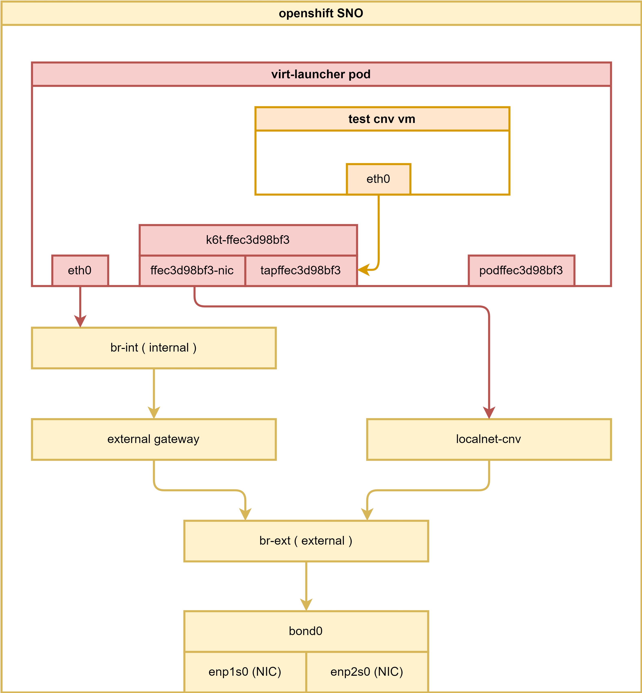
There are also some docs about the dummy interface
The need to share data from the CNI stage to the virt-launcher stage may arise. There may be several options to implement this, one relatively simple method could be to preserve the data on a dummy interface. Aa a network binding plugin author, both the CNI plugin and the sidecar codebase is available, therefore both can be in sync to share such information.
We put the virt-launch pod definition here, for later reference. We can see from the pod definition, the network part is the same with the pod we used in previous examples. So we think it is libvirt make the difference.
kind: Pod
apiVersion: v1
metadata:
generateName: virt-launcher-centos-stream9-gold-rabbit-80-
annotations:
kubevirt.io/migrationTransportUnix: 'true'
openshift.io/scc: kubevirt-controller
kubevirt.io/domain: centos-stream9-gold-rabbit-80
k8s.ovn.org/pod-networks: '{"default":{"ip_addresses":["10.132.0.78/23"],"mac_address":"0a:58:0a:84:00:4e","gateway_ips":["10.132.0.1"],"routes":[{"dest":"10.132.0.0/14","nextHop":"10.132.0.1"},{"dest":"172.22.0.0/16","nextHop":"10.132.0.1"},{"dest":"100.64.0.0/16","nextHop":"10.132.0.1"}],"ip_address":"10.132.0.78/23","gateway_ip":"10.132.0.1"},"llm-demo/llm-demo-localnet-network":{"ip_addresses":null,"mac_address":"02:00:a3:00:00:01"}}'
k8s.v1.cni.cncf.io/networks: '[{"name":"llm-demo-localnet-network","namespace":"llm-demo","mac":"02:00:a3:00:00:01","interface":"podffec3d98bf3"}]'
vm.kubevirt.io/workload: server
kubevirt.io/vm-generation: '1'
post.hook.backup.velero.io/container: compute
vm.kubevirt.io/flavor: small
seccomp.security.alpha.kubernetes.io/pod: localhost/kubevirt/kubevirt.json
kubectl.kubernetes.io/default-container: compute
k8s.v1.cni.cncf.io/network-status: |-
[{
"name": "ovn-kubernetes",
"interface": "eth0",
"ips": [
"10.132.0.78"
],
"mac": "0a:58:0a:84:00:4e",
"default": true,
"dns": {}
},{
"name": "llm-demo/llm-demo-localnet-network",
"interface": "podffec3d98bf3",
"mac": "02:00:a3:00:00:01",
"dns": {}
}]
pre.hook.backup.velero.io/container: compute
vm.kubevirt.io/os: centos-stream9
post.hook.backup.velero.io/command: '["/usr/bin/virt-freezer", "--unfreeze", "--name", "centos-stream9-gold-rabbit-80", "--namespace", "llm-demo"]'
pre.hook.backup.velero.io/command: '["/usr/bin/virt-freezer", "--freeze", "--name", "centos-stream9-gold-rabbit-80", "--namespace", "llm-demo"]'
resourceVersion: '1001724'
name: virt-launcher-centos-stream9-gold-rabbit-80-nml27
uid: 75b34f0d-7744-4677-a312-22d44b7581cc
creationTimestamp: '2024-07-23T03:56:16Z'
namespace: llm-demo
ownerReferences:
- apiVersion: kubevirt.io/v1
kind: VirtualMachineInstance
name: centos-stream9-gold-rabbit-80
uid: 8978dfff-1632-44d5-b861-e4e721a27500
controller: true
blockOwnerDeletion: true
labels:
kubevirt.io: virt-launcher
kubevirt.io/created-by: 8978dfff-1632-44d5-b861-e4e721a27500
kubevirt.io/domain: centos-stream9-gold-rabbit-80
kubevirt.io/nodeName: master-01-demo
kubevirt.io/size: small
vm.kubevirt.io/name: centos-stream9-gold-rabbit-80
spec:
nodeSelector:
kubernetes.io/arch: amd64
kubevirt.io/schedulable: 'true'
restartPolicy: Never
serviceAccountName: default
priority: 0
schedulerName: default-scheduler
enableServiceLinks: false
affinity:
nodeAffinity:
requiredDuringSchedulingIgnoredDuringExecution:
nodeSelectorTerms:
- matchExpressions:
- key: node-labeller.kubevirt.io/obsolete-host-model
operator: DoesNotExist
terminationGracePeriodSeconds: 210
preemptionPolicy: PreemptLowerPriority
nodeName: master-01-demo
securityContext:
runAsUser: 107
runAsGroup: 107
runAsNonRoot: true
fsGroup: 107
seccompProfile:
type: Localhost
localhostProfile: kubevirt/kubevirt.json
containers:
- volumeDevices:
- name: rootdisk
devicePath: /dev/rootdisk
resources:
limits:
devices.kubevirt.io/kvm: '1'
devices.kubevirt.io/tun: '1'
devices.kubevirt.io/vhost-net: '1'
requests:
cpu: 100m
devices.kubevirt.io/kvm: '1'
devices.kubevirt.io/tun: '1'
devices.kubevirt.io/vhost-net: '1'
ephemeral-storage: 50M
memory: 2294Mi
terminationMessagePath: /dev/termination-log
name: compute
command:
- /usr/bin/virt-launcher-monitor
- '--qemu-timeout'
- 289s
- '--name'
- centos-stream9-gold-rabbit-80
- '--uid'
- 8978dfff-1632-44d5-b861-e4e721a27500
- '--namespace'
- llm-demo
- '--kubevirt-share-dir'
- /var/run/kubevirt
- '--ephemeral-disk-dir'
- /var/run/kubevirt-ephemeral-disks
- '--container-disk-dir'
- /var/run/kubevirt/container-disks
- '--grace-period-seconds'
- '195'
- '--hook-sidecars'
- '0'
- '--ovmf-path'
- /usr/share/OVMF
- '--run-as-nonroot'
env:
- name: XDG_CACHE_HOME
value: /var/run/kubevirt-private
- name: XDG_CONFIG_HOME
value: /var/run/kubevirt-private
- name: XDG_RUNTIME_DIR
value: /var/run
- name: KUBEVIRT_RESOURCE_NAME_nic-yellow-duck-37
- name: POD_NAME
valueFrom:
fieldRef:
apiVersion: v1
fieldPath: metadata.name
securityContext:
capabilities:
add:
- NET_BIND_SERVICE
drop:
- ALL
privileged: false
runAsUser: 107
runAsGroup: 107
runAsNonRoot: true
allowPrivilegeEscalation: false
imagePullPolicy: IfNotPresent
volumeMounts:
- name: private
mountPath: /var/run/kubevirt-private
- name: public
mountPath: /var/run/kubevirt
- name: ephemeral-disks
mountPath: /var/run/kubevirt-ephemeral-disks
- name: container-disks
mountPath: /var/run/kubevirt/container-disks
mountPropagation: HostToContainer
- name: libvirt-runtime
mountPath: /var/run/libvirt
- name: sockets
mountPath: /var/run/kubevirt/sockets
- name: hotplug-disks
mountPath: /var/run/kubevirt/hotplug-disks
mountPropagation: HostToContainer
terminationMessagePolicy: File
image: 'registry.redhat.io/container-native-virtualization/virt-launcher-rhel9@sha256:e73d2aaf9fe0833be3c8aa96ecc40366a8c6cc247820af793f12f0d3eeceea81'
hostname: centos-stream9-gold-rabbit-80
automountServiceAccountToken: false
serviceAccount: default
volumes:
- name: private
emptyDir: {}
- name: public
emptyDir: {}
- name: sockets
emptyDir: {}
- name: virt-bin-share-dir
emptyDir: {}
- name: libvirt-runtime
emptyDir: {}
- name: ephemeral-disks
emptyDir: {}
- name: container-disks
emptyDir: {}
- name: rootdisk
persistentVolumeClaim:
claimName: centos-stream9-gold-rabbit-80
- name: hotplug-disks
emptyDir: {}
dnsPolicy: ClusterFirst
tolerations:
- key: node.kubernetes.io/not-ready
operator: Exists
effect: NoExecute
tolerationSeconds: 300
- key: node.kubernetes.io/unreachable
operator: Exists
effect: NoExecute
tolerationSeconds: 300
- key: node.kubernetes.io/memory-pressure
operator: Exists
effect: NoSchedule
readinessGates:
- conditionType: kubevirt.io/virtual-machine-unpaused
status:
phase: Running
conditions:
- type: kubevirt.io/virtual-machine-unpaused
status: 'True'
lastProbeTime: '2024-07-23T03:56:16Z'
lastTransitionTime: '2024-07-23T03:56:16Z'
reason: NotPaused
message: the virtual machine is not paused
- type: Initialized
status: 'True'
lastProbeTime: null
lastTransitionTime: '2024-07-23T03:56:16Z'
- type: Ready
status: 'True'
lastProbeTime: null
lastTransitionTime: '2024-07-23T03:56:19Z'
- type: ContainersReady
status: 'True'
lastProbeTime: null
lastTransitionTime: '2024-07-23T03:56:19Z'
- type: PodScheduled
status: 'True'
lastProbeTime: null
lastTransitionTime: '2024-07-23T03:56:16Z'
hostIP: 192.168.99.23
podIP: 10.132.0.78
podIPs:
- ip: 10.132.0.78
startTime: '2024-07-23T03:56:16Z'
containerStatuses:
- restartCount: 0
started: true
ready: true
name: compute
state:
running:
startedAt: '2024-07-23T03:56:19Z'
imageID: 'registry.redhat.io/container-native-virtualization/virt-launcher-rhel9@sha256:85f0e421ab9804ca9f8b7e36f77881b1b5014e67a5aae79f34fa4b36e53f5b8d'
image: 'registry.redhat.io/container-native-virtualization/virt-launcher-rhel9@sha256:e73d2aaf9fe0833be3c8aa96ecc40366a8c6cc247820af793f12f0d3eeceea81'
lastState: {}
containerID: 'cri-o://02179acc5a9ef0a1561a3b0b68cf61c559d3bbb1d0e29202be8b674fd0c1716d'
qosClass: Burstableand VMI
apiVersion: kubevirt.io/v1
kind: VirtualMachine
metadata:
annotations:
kubevirt.io/latest-observed-api-version: v1
kubevirt.io/storage-observed-api-version: v1
vm.kubevirt.io/validations: |
[
{
"name": "minimal-required-memory",
"path": "jsonpath::.spec.domain.memory.guest",
"rule": "integer",
"message": "This VM requires more memory.",
"min": 1610612736
}
]
resourceVersion: '1074087'
name: centos-stream9-gold-rabbit-80
uid: ab90bbce-09a2-4275-83a6-3c2516ab2f7a
creationTimestamp: '2024-07-19T06:57:33Z'
generation: 1
manager: Go-http-client
operation: Update
subresource: status
time: '2024-07-23T06:23:12Z'
namespace: llm-demo
finalizers:
- kubevirt.io/virtualMachineControllerFinalize
labels:
app: centos-stream9-gold-rabbit-80
cnv: vm-01
kubevirt.io/dynamic-credentials-support: 'true'
vm.kubevirt.io/template: centos-stream9-server-small
vm.kubevirt.io/template.namespace: openshift
vm.kubevirt.io/template.revision: '1'
vm.kubevirt.io/template.version: v0.27.0
spec:
dataVolumeTemplates:
- apiVersion: cdi.kubevirt.io/v1beta1
kind: DataVolume
metadata:
creationTimestamp: null
name: centos-stream9-gold-rabbit-80
spec:
sourceRef:
kind: DataSource
name: centos-stream9
namespace: openshift-virtualization-os-images
storage:
resources:
requests:
storage: 30Gi
running: true
template:
metadata:
annotations:
vm.kubevirt.io/flavor: small
vm.kubevirt.io/os: centos-stream9
vm.kubevirt.io/workload: server
creationTimestamp: null
labels:
kubevirt.io/domain: centos-stream9-gold-rabbit-80
kubevirt.io/size: small
spec:
architecture: amd64
domain:
cpu:
cores: 1
sockets: 1
threads: 1
devices:
disks:
- disk:
bus: virtio
name: rootdisk
- disk:
bus: virtio
name: cloudinitdisk
interfaces:
- bridge: {}
macAddress: '02:00:a3:00:00:01'
model: virtio
name: nic-yellow-duck-37
logSerialConsole: false
networkInterfaceMultiqueue: true
rng: {}
machine:
type: pc-q35-rhel9.2.0
memory:
guest: 2Gi
resources: {}
networks:
- multus:
networkName: llm-demo-localnet-network
name: nic-yellow-duck-37
terminationGracePeriodSeconds: 180
volumes:
- dataVolume:
name: centos-stream9-gold-rabbit-80
name: rootdisk
- cloudInitNoCloud:
networkData: |
ethernets:
eth0:
addresses:
- 192.168.77.71
gateway4: 192.168.77.1
version: 2
userData: |
#cloud-config
user: root
password: redhat
chpasswd:
expire: false
name: cloudinitdisk
status:
conditions:
- lastProbeTime: null
lastTransitionTime: '2024-07-23T06:22:50Z'
status: 'True'
type: Ready
- lastProbeTime: null
lastTransitionTime: null
status: 'True'
type: Initialized
- lastProbeTime: null
lastTransitionTime: null
message: All of the VMI's DVs are bound and not running
reason: AllDVsReady
status: 'True'
type: DataVolumesReady
- lastProbeTime: null
lastTransitionTime: null
message: 'cannot migrate VMI: PVC centos-stream9-gold-rabbit-80 is not shared, live migration requires that all PVCs must be shared (using ReadWriteMany access mode)'
reason: DisksNotLiveMigratable
status: 'False'
type: LiveMigratable
- lastProbeTime: '2024-07-23T06:23:12Z'
lastTransitionTime: null
status: 'True'
type: AgentConnected
created: true
desiredGeneration: 1
observedGeneration: 1
printableStatus: Running
ready: true
volumeSnapshotStatuses:
- enabled: true
name: rootdisk
- enabled: false
name: cloudinitdisk
reason: 'Snapshot is not supported for this volumeSource type [cloudinitdisk]'end
to build a new example application in Ruby. Or use kubectl to deploy a simple Kubernetes application:
kubectl create deployment hello-node --image=registry.k8s.io/e2e-test-images/agnhost:2.43 -- /agnhost serve-hostname